The first lecture asks how to turn images into token-like vectors for understanding tasks: ViT patches, CLIP alignment, and vision encoder plus projector plus LM pipelines.
ANLP Lecture Companions
This companion now covers seven lecture decks in the repo’s shared HTML study site. It is written for a student who missed class and needs the missing connective tissue the slides assume: what the models are optimizing, why the engineering choices make sense, where the hidden tradeoffs are, and which concepts are most likely to show up on a quiz or final.
The second lecture flips the direction. To generate images with a language-model-like system, we need an image tokenizer, an image de-tokenizer, and a way to model image tokens autoregressively.
The third lecture pivots to modern image generation: diffusion noising and denoising, score-based interpretations, guidance, continuous-time samplers, and why Stable Diffusion 3 uses flow matching in latent space.
The fourth lecture explains why language-model imitation learning is not enough for reward-driven tasks, then builds the RL toolkit the course keeps reusing: MDPs, REINFORCE, discounting, baselines, advantages, and PPO.
The fifth lecture carries that RL toolkit into LLM post-training: one-step versus token-level MDPs, verifiable rewards and RLVR, GRPO-style advantages, math-reasoning RL, and the RLHF pipeline with reward models, reward hacking, and KL control.
The sixth lecture turns post-trained LMs into agents: what counts as an agent, how observation and action spaces are chosen, why tools, skills, and memory matter, and why real deployment pushes us from solo autonomy toward human-centered collaboration.
The seventh lecture turns from agent behavior to efficient deployment: number formats, INT8 quantization schemes, outlier handling with LLM.int8(), local inference stacks like GGUF and llama.cpp, and training-time ideas such as QAT and QLoRA.
The quiz answer keys suggest the course rewards mechanism-level reasoning more than paper-name recall, so the notes below prioritize objectives, estimators, scaling arguments, and what changes when a design choice changes.
Lecture 11
Multimodal Modeling I
This section compresses materials/anlp-s2026-11-multimodal.pdf into the ideas most likely to matter on an exam:
how images become token-like vectors, why ViTs are the default visual backbone, what CLIP actually optimizes,
how LLaVA-style systems connect vision encoders to decoder LMs, and what Molmo and PaliGemma teach us about
token budgets and fine-tuning choices.
Roadmap
The lecture has a clean narrative arc: first solve the representation problem for images, then learn strong image features from text, then pipe those image features into a language model, and finally compare the engineering choices real systems make once token budget and sample efficiency become bottlenecks.
- Given patch size \(P\), compute the number of ViT tokens and reason about the \(\mathcal{O}(N^2)\) attention cost.
- Explain the CLIP objective in words: correct image-text pairs go up, mismatched pairs in the batch go down.
- Explain why CLIP enables zero-shot classification.
- Describe the standard vision encoder → projector → decoder LM pipeline.
- Interpret why pretrained image encoders and joint fine-tuning help in PaliGemma-style systems.
- Slides 1-7 and 45-47 are framing, examples, or closing material, so they are captured indirectly rather than treated as standalone study blocks.
- Slides 12, 14, 15, and 16 are folded into one ViT interpretation section instead of four separate notes.
- Slides 26 and 28 are merged into the CLIP section because both support the same take-home message: contrastive pretraining gives transferable features.
- Slides 37-41 are merged into one Molmo data-and-task lesson, since the individual screenshots mostly illustrate the same point.
ANLP_quiz_3_answer_key.pdfdirectly tests ViT patch scaling and CLIP’s batch contrastive objective.- The quiz style favors “what changes if I modify this architecture or objective?” reasoning.
- That calibration is why each concept block below includes both the intuition and the most likely misunderstanding.
The lecture begins with the right question: how do we turn an image into the kind of object a language model can use?
The slide says that text models already operate on a sequence of vectors, so a multimodal system needs an image encoder \(f_{\mathrm{enc}}(x_{\mathrm{image}}) \rightarrow z_1, \dots, z_L\). This is not just notation. It is the design problem that determines almost everything downstream: what the tokens mean, how much spatial detail survives, how expensive the model is, and how easily the model can share information across vision and language.
Without a learned image representation, a language model has no principled way to map a two-dimensional pixel grid into the one-dimensional token stream it expects.
Text arrives already chunked into tokens. Images do not. Multimodal modeling starts by inventing the visual analogue of tokens.
Image “tokens” are usually continuous vectors, not discrete vocabulary items. They also need some positional signal, because a flattened sequence otherwise loses the image’s spatial layout.
If a question asks what multimodal modeling adds beyond a plain LM, the clean answer is: a vision representation architecture plus a learning objective that makes those vectors useful.
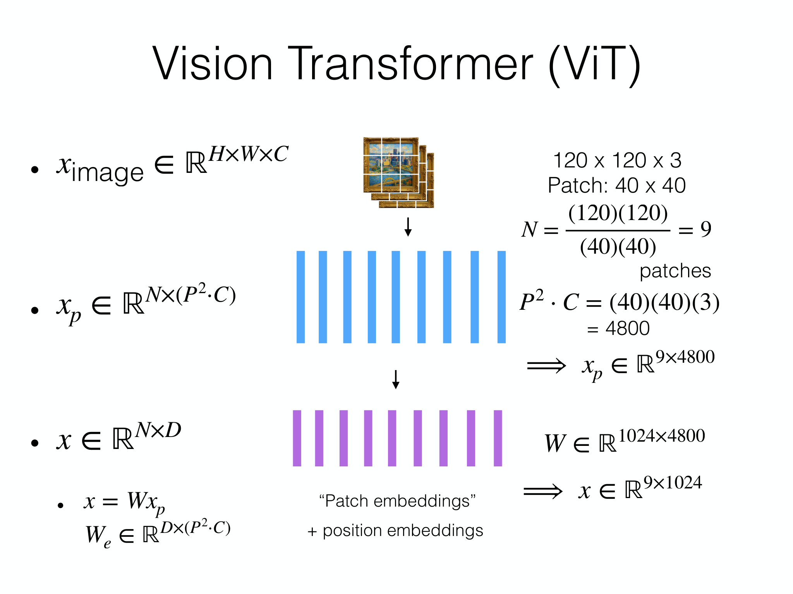
ViT solves the representation problem by treating image patches like tokens
ViT divides an image \(x_{\mathrm{image}} \in \mathbb{R}^{H \times W \times C}\) into \(N = \frac{HW}{P^2}\) square patches of side length \(P\). Each patch is flattened into a vector in \(\mathbb{R}^{P^2 C}\), linearly projected into dimension \(D\), and then combined with position embeddings. After that, the model is just a transformer operating on a sequence of visual token vectors.
The two formulas worth memorizing are the token count and the scaling implication.
\[ N = \frac{HW}{P^2} \qquad\text{and}\qquad \text{self-attention cost} \propto N^2. \]
If you halve the patch size while keeping image resolution fixed, the number of tokens becomes \(4N\), so the attention cost becomes \(16\times\) larger. That exact reasoning already appears in the quiz set.
Patchification makes images compatible with transformer machinery, while self-attention lets the model combine information from different parts of the image before classification or downstream use.
Each patch starts as a local snapshot, but the transformer can build global context by letting each patch attend to others. That is why ViT can identify salient regions instead of relying only on local convolutions.
The later ViT slides show three qualitative facts: learned position embeddings preserve spatial regularity, attention highlights task-relevant regions, and deeper layers tend to aggregate information over larger spatial spans.
Patch size is not a harmless implementation detail. Smaller patches preserve finer detail, but they explode token count and compute.
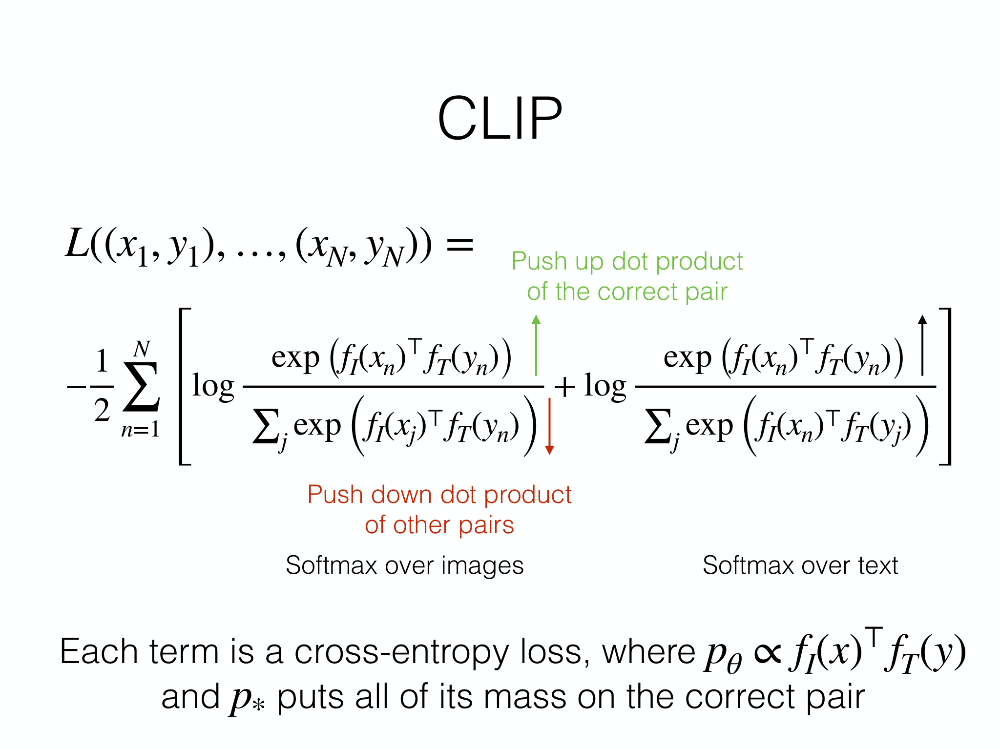
CLIP learns image representations from language by aligning matching image-text pairs in a shared space
The lecture motivates CLIP by contrasting it with older image pretraining that used only class labels. A caption carries much richer information than a single class name, and web-scale image-text pairs are easier to scale than hand-labeled classification datasets. CLIP therefore learns an image encoder \(f_I(x)\) and a text encoder \(f_T(y)\) whose outputs have high similarity when the image and caption match and low similarity when they do not.
The key idea is easier to remember in words than in symbols:
\[ \text{raise } f_I(x_n)^\top f_T(y_n) \quad\text{and lower}\quad f_I(x_j)^\top f_T(y_n),\; f_I(x_n)^\top f_T(y_j) \]
for mismatched pairs in the same batch. The displayed loss is just two cross-entropy terms, one softmaxing over images and one softmaxing over text.
Once images and text live in a compatible embedding space, the model can transfer to new tasks without retraining a task-specific classifier.
At inference time, you can embed an image and several candidate text prompts such as “a photo of a dog” or “a photo of a bird,” then choose the text with highest similarity.
The course already asks about this objective directly. If a question asks what the loss is doing, say: maximize similarity of the correct pair and minimize similarity of incorrect batch pairings.
CLIP is not trained to generate captions token by token. It is a contrastive representation learner, not an autoregressive captioning model.
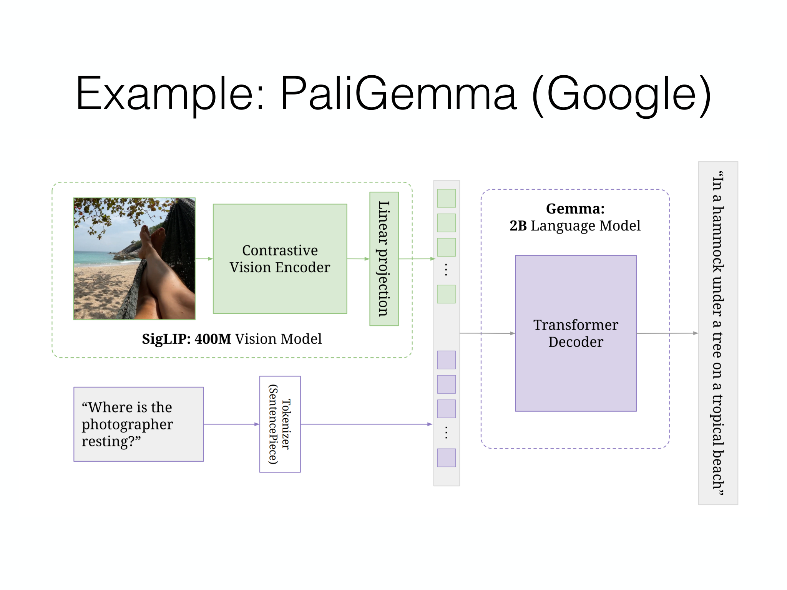
A multimodal assistant is usually a decoder LM wrapped around a pretrained vision encoder
The lecture’s LLaVA section gives the canonical recipe. First preprocess the image into patches. Then run a pretrained vision encoder such as a CLIP or SigLIP ViT to obtain a sequence of image vectors. Those vectors are linearly projected into the language model’s embedding dimension and inserted alongside ordinary text tokens. The decoder LM then continues doing what it already knows how to do: autoregressively generate text.
“Image tokens” are usually not raw pixels. They are vectors extracted by a pretrained visual backbone and then translated into the LM’s representational space.
The vision encoder and the LM were not trained with the same hidden size or embedding geometry. The projector is a learned adapter that lets the LM read the visual features.
When the lecture says “for image positions, skip the loss,” the point is that the model is trained to produce textual outputs, not to predict the image vectors themselves as next tokens.
The presence of a language model does not mean the system has learned vision from scratch. In most practical multimodal systems, the heavy visual lifting is still done by the pretrained image encoder.
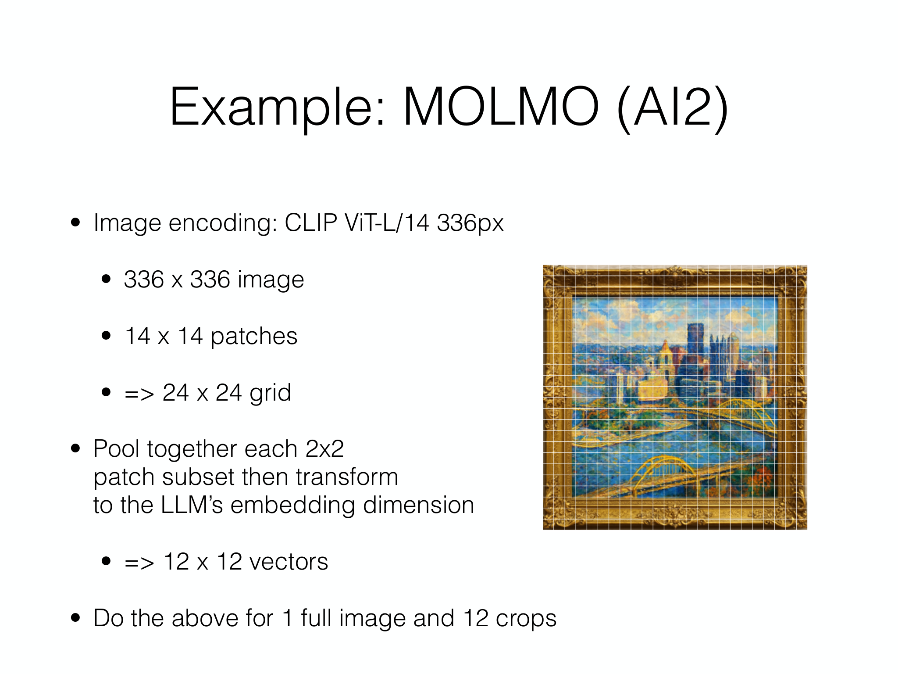
Molmo shows that practical multimodal systems are constrained by token budget, not just model elegance
The most important Molmo slide is the image-encoding one. A 336 by 336 image with a ViT-L/14 encoder yields a 24 by 24 grid of features. Molmo then pools each 2 by 2 patch group, shrinking that to a 12 by 12 grid before projecting into the LM’s space. It also processes one full image and many crops, which gives the system both global context and local detail.
High-resolution vision features are useful, but an LM has a finite context budget. Pooling and crop selection are ways to spend that budget more intelligently.
The full image answers “what is the scene?” while the crops answer “what small object or text might I miss if I only look globally?”
The dataset slides show that capability comes from task diversity too: captions, OCR-flavored questions, pointing, and synthetic data all teach different behaviors.
If asked how real systems differ from the clean lecture pipeline, a strong answer is: they compress, pool, crop, and curate data because raw visual tokens are too expensive.
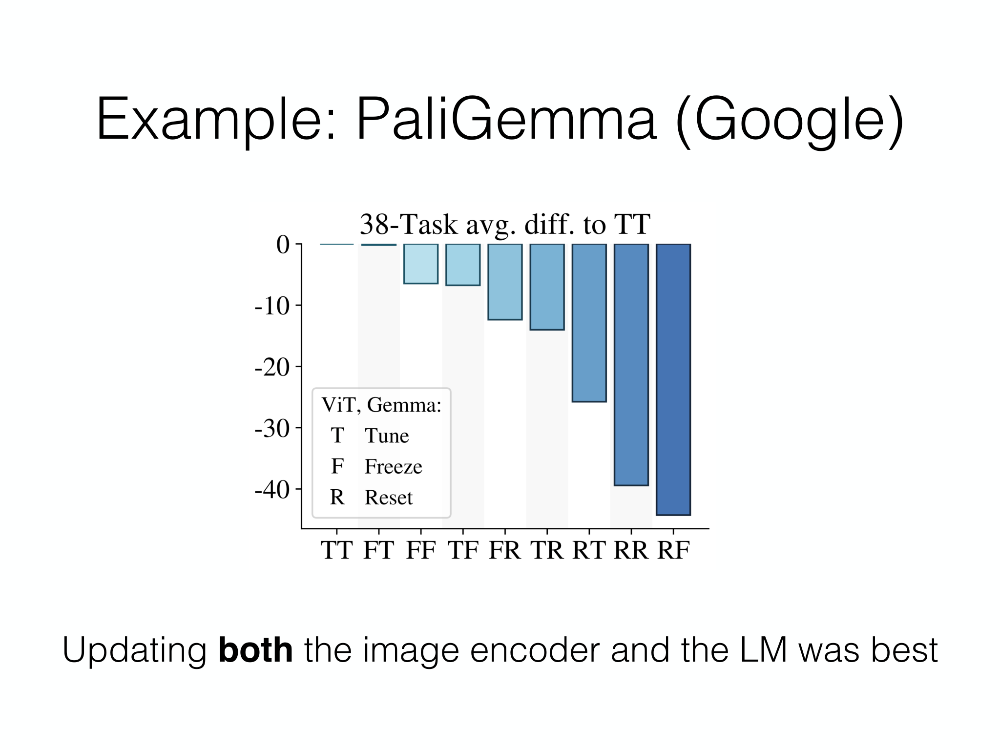
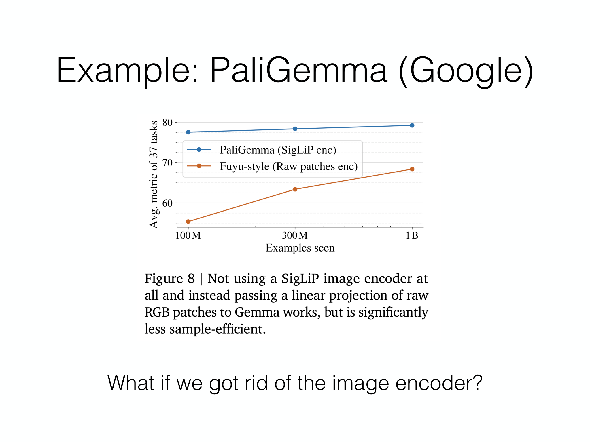
The closing lesson is not “any vision interface works”; it is that pretrained visual structure and coordinated fine-tuning matter a lot
The PaliGemma ablations make two qualitative points. First, updating both the image encoder and the language model gives the best performance. Freezing or resetting important components hurts, which means the multimodal interface is not just a superficial wrapper around two independent pretrained models. Second, you can remove the image encoder and feed projected raw RGB patches directly to the LM, but doing so is much less sample-efficient.
A pretrained contrastive image encoder already knows useful visual abstractions. Throwing that away forces the LM to relearn vision from weaker supervision.
The image encoder provides compressed visual semantics; the LM provides linguistic fluency and instruction following. Strong multimodal systems need both parts to cooperate.
If a question asks what the ablations show, the safest answer is: pretrained vision features help, joint tuning helps, and raw patches are possible but data-hungry.
“Raw patches can work” does not mean the encoder is unnecessary in practice. The slide’s point is about efficiency and optimization, not about proving that all designs are equally good.
Glossary
These are the terms most worth being able to define cleanly under time pressure.
A square chunk of the image. ViT uses patches as the visual analogue of tokens.
The vector produced by flattening a patch and applying a learned linear projection.
A space where image and text vectors can be compared directly, typically by dot product or cosine similarity.
An objective that pulls matching items together and pushes mismatched items apart.
Continuous vectors representing visual content that are supplied to the language model.
The learned mapping that converts vision-encoder features into the LM’s embedding dimension.
Classifying an image by comparing it to text prompts without training a dedicated classifier for that label set.
How much data a method needs to reach a given performance level. The raw-patch result is worse on this dimension.
End-of-Lecture Summary
- Multimodal modeling starts with representation: convert pixels into a sequence of informative vectors.
- ViT does this with patchification, projection, position embeddings, and transformer context mixing.
- CLIP learns strong image representations by contrasting matched and mismatched image-text pairs at scale.
- LLaVA-style systems usually reuse those pretrained image features and bridge them into a decoder LM through a projector.
- Real systems win or lose on token budget, data mixture, and fine-tuning decisions, not just on the high-level diagram.
- Patch-count reasoning and the quadratic cost of attention in ViT.
- The meaning of the CLIP loss and the role of in-batch negatives.
- Why zero-shot classification becomes possible after contrastive alignment.
- Why image tokens need a projector before entering the LM.
- Why pretrained image encoders and joint tuning outperform learning from raw patches alone.
- If patch size goes from \(P\) to \(P/2\), how do token count and attention cost change?
- In CLIP, where do the negative pairs come from when training on a batch of paired data?
- Why does CLIP support zero-shot classification without training a new classifier head?
- What job does the linear projector play in a vision-language model?
- Why might a system use both a full image and several crops?
- What do the PaliGemma ablations suggest about freezing, tuning, and removing the image encoder?
Lecture 12
Multimodal Modeling II
This section compresses materials/anlp-s2026-12-multimodal-ii.pdf into the core ideas a missed-lecture student actually needs:
why generative multimodal modeling needs both an image tokenizer and a de-tokenizer, why raw-pixel autoregression is elegant but impractical,
how standard VAE ideas lead into VQ-VAE’s discrete codebook, why VQ-GAN improves perceptual quality, and what DALL-E or Chameleon-style systems gain and lose by making “everything tokens.”
Roadmap
The lecture starts wide with the main image-generation paradigms, then narrows to one specific goal: make images behave enough like text tokens that a single autoregressive transformer can model both. It first shows why raw-pixel modeling is conceptually simple but computationally brutal, then reviews the VAE machinery needed to understand compression, then replaces continuous latents with a learned discrete codebook in VQ-VAE, and finally shows how VQ-GAN plus a transformer language model produce unified text-and-image token systems such as DALL-E and Chameleon.
- Explain why pixel-level autoregression scales poorly even though the likelihood objective is straightforward.
- State the VAE objective at a high level: reconstruction plus KL regularization toward a prior.
- Describe VQ-VAE quantization and why a straight-through gradient estimator is needed.
- Explain what VQ-GAN adds beyond VQ-VAE and why tokenized images are cheaper to model than raw pixels.
- Interpret the main tradeoff of unified autoregressive image-token models: elegant token unification versus tokenizer information loss.
- Slides 1-5, 11, 20, and 44-45 are framing or transition slides, so they are folded into the retained concept blocks rather than treated separately.
- Slides 15-17 are merged into one pixel-autoregression block because PixelRNN, Image Transformer, and iGPT all illustrate the same core recipe.
- Slides 22-28 become one VAE bridge section; the ELBO derivation is kept conceptually, but the algebra is compressed to the parts most useful for exam reasoning.
- Slides 33, 37-38, 40, and 42 are example or output slides, so they are summarized inside the VQ-VAE, VQ-GAN, and unified-model sections instead of receiving standalone note cards.
ANLP_quiz_3_answer_key.pdfdirectly tests VQ-VAE’s straight-through estimator, which is a strong signal that this course likes mechanism-level questions.- The same quiz also tests ViT scaling and CLIP contrastive reasoning, reinforcing that formulas matter when they explain a design tradeoff.
ANLP_quiz_4_answer_key.pdfshifts toward diffusion reasoning, so Lecture 12’s closing “unified autoregression is elegant but not the best image-generation paradigm” is likely intentional setup for what comes next.
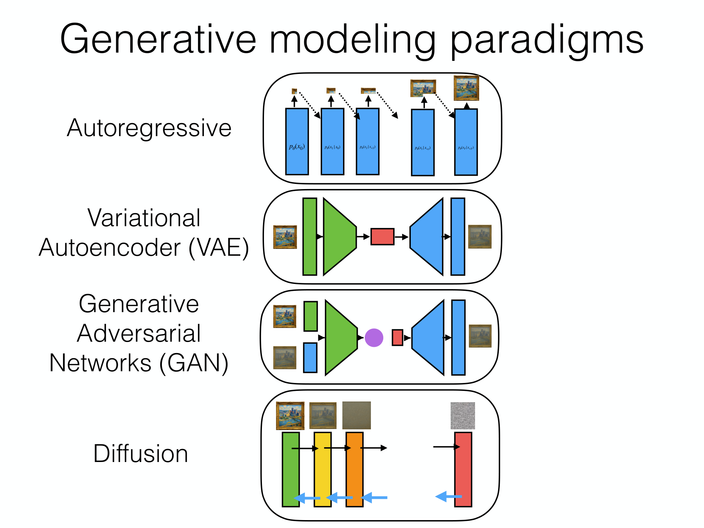
The lecture is not just surveying image generators; it is motivating a specific multimodal design goal
The early slides list four generative paradigms for images: autoregressive models, VAEs, GANs, and diffusion. The important hidden message is that the lecture is not trying to crown one universal winner. It is trying to solve a multimodal systems problem: if we want one transformer to handle both text and images, we need an image tokenizer to turn pixels into discrete symbols and an image de-tokenizer to turn those symbols back into pixels.
Autoregressive models generate one unit at a time, VAEs compress into a latent then decode, GANs learn to fool a discriminator, and diffusion learns to reverse a noising process. The lecture then focuses on the autoregressive route because it is the most naturally compatible with language-model style token prediction.
Lecture 11 only needed an image encoder because the output was text. Lecture 12 cares about image generation, so it needs both directions: image → tokens and tokens → image.
The dream is “remove modality-specific bridges.” If text and image can both be represented as sequences of discrete symbols, one transformer can model them in a unified way.
The lecture is not claiming autoregression is the best way to generate photorealistic images overall. It is claiming autoregression is the cleanest way to unify text and image under one token-prediction interface.
The most direct approach is to treat an image as a very long sequence of pixel values, but that simplicity becomes the main problem
The first attempt is pure language-model thinking: linearize the image into a sequence of pixel or channel values and train with maximum likelihood.
If \(x_{\mathrm{img}} \in \mathbb{R}^{H \times W \times C}\), we convert it into a sequence \(x_1, \dots, x_T\) and model each element with
\(p_\theta(x_t \mid x_{ The core recipe is just language modeling applied to pixels: \[
x_{\mathrm{img}} \rightarrow x_1, \dots, x_T,
\qquad
x_t \in \{1, \dots, 256\},
\qquad
\mathcal{L}_{\mathrm{MLE}} = \sum_{t=1}^{T} -\log p_\theta(x_t \mid x_{ For a \(1024 \times 1024\) RGB image, \(T \approx 1024 \cdot 1024 \cdot 3 = 3{,}145{,}728\) predicted values. That is why the sequence-length challenge is not a footnote; it dominates the design. Sequence length is enormous, and each individual pixel value carries very little semantic meaning compared with a word token. The model spends huge effort modeling low-level local detail before it can capture high-level structure. A single word can carry a concept like “bridge” or “zebra.” A single pixel mostly says “this one color channel is slightly brighter here.” That means semantic understanding is spread across many more positions. PixelRNN, Image Transformer, and iGPT show that the recipe is real and can scale, but the lecture groups them to make one point: practical pixel-level generation typically needs special attention patterns or very large compute because the raw sequence is too long. If asked why raw-pixel autoregression is unattractive, say both pieces: it creates extremely long sequences and the tokens are semantically weak, so learning becomes expensive and data-hungry.
Before we can discretize images, the lecture briefly reviews the continuous-latent compression story behind VAEs
The VAE slides matter because VQ-VAE is easier to understand if you first remember what a standard VAE is doing. A VAE assumes data is generated from a latent variable \(z\): sample \(z \sim p(z)\), then decode it into an image through \(p_{\theta_{\mathrm{dec}}}(x \mid z)\). Training uses an encoder \(q_{\theta_{\mathrm{enc}}}(z \mid x)\) to approximate the posterior over latents and balances faithful reconstruction against keeping the latent space close to a simple prior.
The standard objective is:
\[ \mathcal{L}_{\mathrm{VAE}}(x) = -\mathbb{E}_{q_{\theta_{\mathrm{enc}}}(z \mid x)}[\log p_{\theta_{\mathrm{dec}}}(x \mid z)] + D_{\mathrm{KL}}\!\left(q_{\theta_{\mathrm{enc}}}(z \mid x)\,\|\,p(z)\right). \]
The first term says “reconstruct well.” The second says “do not let the encoder invent an arbitrary latent space that cannot be sampled from at generation time.”
Without regularization, the encoder could memorize the training set in an awkward latent geometry. Matching the encoder distribution to a simple prior such as \(p(z)=\mathcal{N}(0,I)\) makes sampling and generation possible.
The ELBO slide explains that this objective is a lower bound on \(\log p(x)\), and the reparameterization trick is what lets gradients flow through latent sampling during training. You do not usually need to reproduce the full derivation, but you should know what those phrases are doing there.
A standard VAE gives a continuous latent representation. That is already useful for compression, but it is not yet the discrete token sequence a language-model-style transformer wants.
If asked how a VAE differs from pure autoregression, the clean answer is: it learns a latent bottleneck and reconstructs from it, rather than predicting every observed variable directly one step at a time.
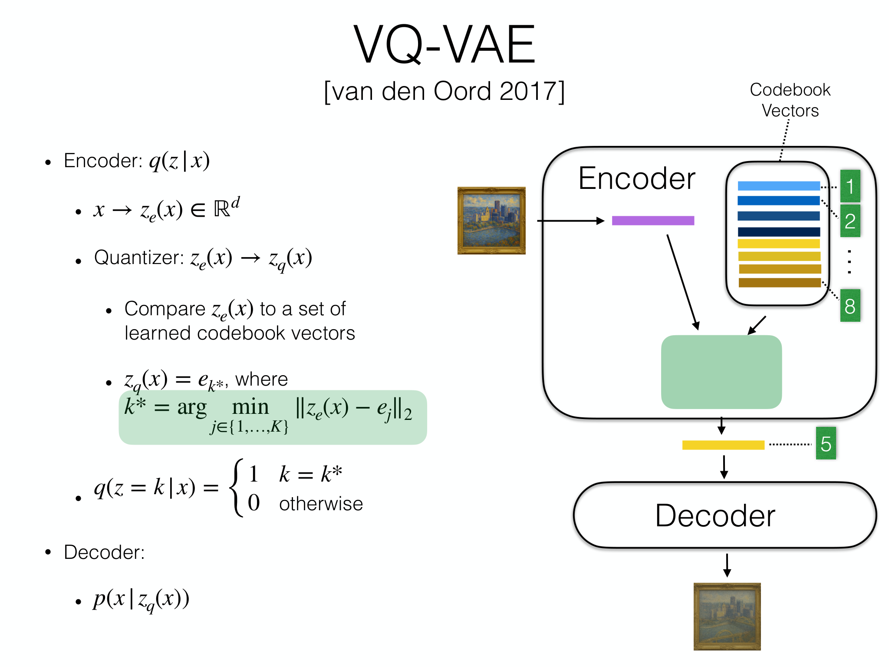
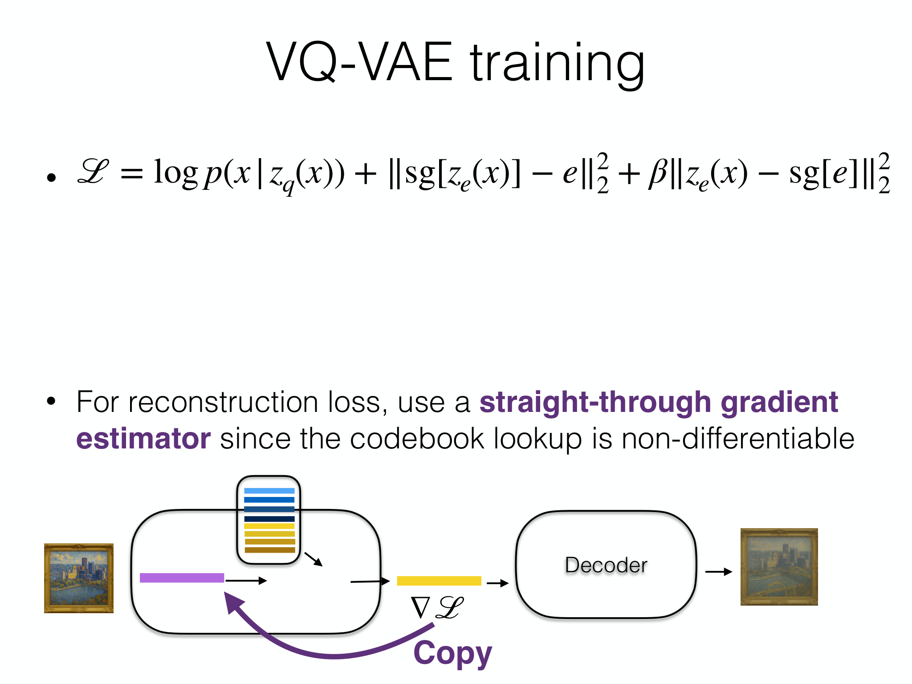
VQ-VAE turns “compress the image” into “pick entries from a learned visual vocabulary”
VQ-VAE keeps the encoder-decoder structure but changes the latent space from continuous to discrete. The encoder first produces a continuous vector \(z_e(x)\). A quantizer then compares \(z_e(x)\) to a learned codebook \(\{e_1, \dots, e_K\}\) and replaces it with the nearest codebook vector. The decoder reconstructs the image from that quantized representation, and the codebook index becomes a token that a transformer can model later.
The quantization step is the key equation to know:
\[ k^* = \arg\min_{j \in \{1,\dots,K\}} \lVert z_e(x) - e_j \rVert_2, \qquad z_q(x) = e_{k^*}. \]
This is why the model produces discrete image tokens: each local latent gets replaced by a codebook entry index.
The nearest-neighbor lookup uses an argmin, which is discrete and non-differentiable. The straight-through estimator lets decoder gradients act as if the quantization step were copied through, so the encoder still learns.
One term rewards good reconstruction. A second term moves codebook entries toward encoder outputs. A third “commitment” term discourages the encoder from wandering arbitrarily instead of settling near one codebook vector.
A standard VAE says “compress into a point in continuous space.” VQ-VAE says “compress into a sequence of visual dictionary entries.” That makes the output much easier to hand off to a token model.
The codebook indices are not human-interpretable class labels. They are learned discrete building blocks chosen because they help reconstruction, not because each one corresponds to a named semantic concept.
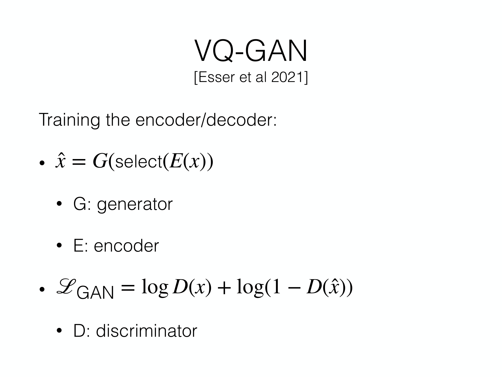
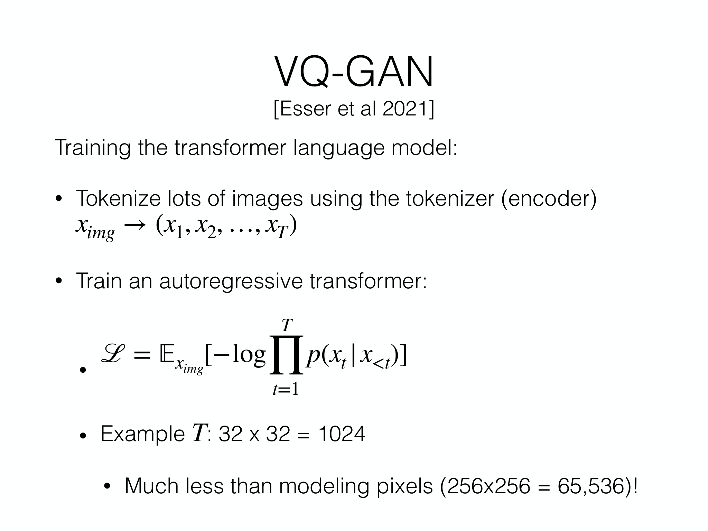
VQ-GAN makes the discrete-token idea more visually useful by improving the tokenizer and then training a transformer on the resulting tokens
The lecture’s VQ-GAN section modifies the VQ-VAE objective by adding GAN-style and perceptual losses. The goal is not just to reconstruct the right average pixels, but to produce sharper, more realistic reconstructions that preserve perceptually important structure. Once the tokenizer and de-tokenizer are trained, we can tokenize a large image dataset and train a standard autoregressive transformer on the discrete image-token sequences.
The scaling benefit is the simplest thing to remember:
\[ 32 \times 32 = 1024 \qquad\text{versus}\qquad 256 \times 256 = 65{,}536. \]
If the tokenizer turns an image into a \(32 \times 32\) grid of codes, the transformer sees about sixty-four times fewer positions than raw \(256 \times 256\) pixels.
VQ-VAE gives discrete latents; VQ-GAN tries to make those latents reconstruct images that look better to humans. The adversarial and perceptual terms target visual fidelity that plain reconstruction losses often miss.
A poor tokenizer is a poor vocabulary. If the code sequence throws away important visual detail, the downstream transformer can never recover it no matter how strong the language model is.
The output slides are there to show that better tokenizers matter. The lecture does not need you to memorize specific images; it wants you to see why perceptual quality of the tokenizer/de-tokenizer directly affects the final generative system.
If asked why VQ-GAN helps, say: it preserves the discrete-token interface of VQ-VAE but uses stronger image-quality objectives so the resulting tokens are a better substrate for transformer-based generation.
The endgame is a unified autoregressive model where text and image codes share one token-prediction framework
After learning a tokenizer and de-tokenizer, the lecture’s recipe is straightforward: add image tokens to the language model vocabulary, then train or fine-tune the model on sequences containing both text and image tokens. DALL-E and Chameleon are examples of this idea. The attraction is conceptual simplicity: one autoregressive model, one next-token objective, and a unified way to do multi-to-text, multi-to-image, or multi-to-multi generation.
Everything becomes next-token prediction. The model does not need one objective for text and a completely different one for images once both modalities share a discrete token interface.
The tokenizer becomes a bottleneck. If it throws away information or introduces artifacts, the autoregressive model inherits that loss. This is the lecture’s main warning about the “everything is tokens” view.
Chameleon shows this recipe is not just a historical curiosity. Even in 2024, large multimodal systems can still be built by first learning a visual tokenizer and then scaling a transformer over the resulting token stream.
The lecture closes by saying this approach is useful and conceptually clean, but not the final word on state-of-the-art image quality. That is why the final slide points toward diffusion next.
Glossary
These are the Lecture 12 terms most worth being able to explain quickly and precisely.
A model that maps an image into a sequence or grid of discrete codes so a transformer can model it as tokens.
The decoder that turns discrete image codes back into pixels, enabling actual image generation.
A hidden representation \(z\) that an encoder infers from the image and a decoder uses to reconstruct or generate it.
The distribution \(p(z)\) we want latent samples to follow so generation from sampled latents is possible.
The learned set of vectors in VQ-VAE. Each encoder output is replaced by its nearest codebook entry.
The step that replaces a continuous latent vector with a discrete codebook choice.
A training trick that lets gradients pass through a discrete lookup as if it were continuous enough for backpropagation.
A loss that encourages reconstructions to preserve higher-level visual similarity, not just raw pixel-by-pixel accuracy.
End-of-Lecture Summary
- Lecture 12 is about generation, so it needs both an image tokenizer and an image de-tokenizer.
- Raw-pixel autoregression is conceptually simple but suffers from massive sequence length and weak per-token semantics.
- VAEs introduce the compression story: reconstruct well, but keep the latent space sampleable through a prior.
- VQ-VAE discretizes the latent space with a codebook, which creates image tokens a transformer can model.
- VQ-GAN improves the perceptual quality of those tokens, enabling stronger autoregressive token-based image generation.
- Unified token models are elegant, but they inherit information loss from the tokenizer and are not the final answer for best image quality.
- Why pixel-level autoregression is computationally and statistically hard.
- The two parts of the VAE objective and what each one is trying to enforce.
- The VQ-VAE quantization rule and why non-differentiability forces the straight-through trick.
- Why VQ-GAN is better thought of as “better visual tokenization” rather than a completely separate transformer objective.
- The main pro and con of treating images and text under one autoregressive token interface.
- Why does a \(1024 \times 1024\) RGB image make raw autoregressive modeling so expensive?
- In a standard VAE, what jobs are done by the reconstruction term and the KL term?
- In VQ-VAE, what exactly is being quantized, and what discrete object comes out?
- Why is the straight-through gradient estimator needed in VQ-VAE training?
- What does VQ-GAN add beyond VQ-VAE, and why should that help downstream generation?
- Why are unified text-plus-image autoregressive models attractive, and what bottleneck do they inherit?
Lecture 15
Multimodal Modeling III
This section compresses materials/anlp-s2026-15-multimodal-iii.pdf into the diffusion-and-flow ideas a missed-lecture student actually needs:
the Gaussian forward and learned reverse processes, the practical noise-prediction objective, why predicting noise means learning a score function,
how guidance makes conditioning work in practice, which engineering tricks make diffusion usable at scale, and what flow matching changes in the Stable Diffusion 3 era.
Roadmap
Lecture 15 completes the multimodal arc by explaining why modern image generation often leaves the discrete-token route behind. It starts with the fixed Gaussian noising process, derives the practical denoising objective, explains why that objective implicitly learns the score function, shows how conditioning and guidance steer samples, then moves to continuous-time views and flow matching as the cleaner transport-based story behind systems like Stable Diffusion 3.
- Write the forward-process and direct-sampling equations and explain the role of \(\alpha_t\) and \(\bar{\alpha}_t\).
- Explain why the practical DDPM loss is “sample a timestep, add noise, predict that noise.”
- Explain why predicting \(\epsilon\) is useful: it implicitly estimates the score \(\nabla_z \log p_t(z)\).
- Reason about what happens if training overweights large timesteps: better coarse denoising, worse fine detail.
- Explain classifier-free guidance and what the guidance scale \(w\) is doing.
- Compare DDPM and flow matching in terms of path, process type, prediction target, and typical number of steps.
- Slides 1-4, 20-21, and 41-43 are title, framing, code, or closing slides, so they are folded into the retained study blocks instead of treated separately.
- Slides 5-9 become one diffusion-setup block because the equations, noise schedule, and dog-to-noise graphic all support the same core idea.
- Slides 10-19 and 22-25 are compressed into one training block because the ELBO, simplified loss, score connection, and sampling loop are one mechanism story.
- Slides 27-31 are merged into one guidance block; the example images are summarized as evidence that guidance changes prompt adherence rather than memorization targets.
- Slides 32-35 are grouped as one extensions block, and slides 36-40 become one flow-matching block with Stable Diffusion 3 as the case study rather than a separate paper-summary section.
ANLP_quiz_4_answer_key.pdfdirectly tests why predicting \(\epsilon\) matters and what happens when you oversample large \(t\), so those ideas are treated as high-priority rather than side remarks.ANLP_quiz_3_answer_key.pdfreinforces that this course likes mechanism-level reasoning, not just paper-name recall, which is why the formulas below always come with design implications.ANLP_quiz_5_answer_key.pdfshows the course also likes “what bottleneck does this technique attack?” questions, so the extensions section is organized around cost, architecture, and sampling speed rather than chronology.
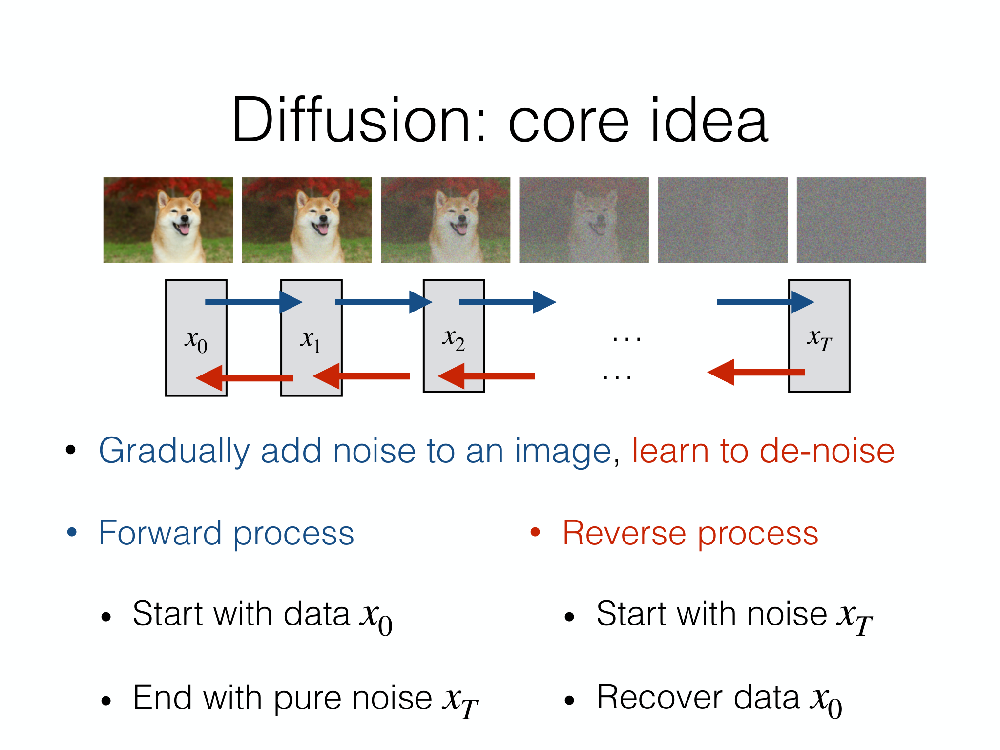
Diffusion replaces “predict the next token” with “iteratively denoise a corrupted sample”
The lecture’s first big move is conceptual, not algebraic. Lecture 12 tried to make image generation look like language modeling by discretizing images into tokens. Lecture 15 instead keeps images in a continuous space and says: define a fixed forward process \(q\) that gradually turns data \(x_0\) into noise \(x_T\), then learn a reverse process \(p_\theta\) that undoes those steps. This is why modern text-to-image systems feel so different from token-based autoregressive image models: they generate by iterative refinement, not by committing to one token at a time.
The Gaussian forward process and its direct-sampling shortcut are the key equations to know.
\[ q(x_t \mid x_{t-1}) = \mathcal{N}\!\left(x_t; \sqrt{\alpha_t}\,x_{t-1}, (1-\alpha_t)I\right), \qquad q(x_t \mid x_0) = \mathcal{N}\!\left(x_t; \sqrt{\bar{\alpha}_t}\,x_0, (1-\bar{\alpha}_t)I\right) \]
\[ \bar{\alpha}_t = \prod_{i=1}^{t}\alpha_i, \qquad x_t = \sqrt{\bar{\alpha}_t}\,x_0 + \sqrt{1-\bar{\alpha}_t}\,\epsilon, \qquad \epsilon \sim \mathcal{N}(0,I). \]
The schedule is chosen so that \(\bar{\alpha}_0 = 1\), \(\bar{\alpha}_T \approx 0\), and noise increases smoothly over time.
The forward process is fixed and easy to sample from; the reverse process is the thing we train. Keeping those roles separate is the first important mental checkpoint.
Training becomes a collection of easier denoising problems at different noise levels instead of a single impossible jump from random noise straight to a high-resolution image.
The direct formula for \(x_t\) is what makes diffusion practical. It means training can jump to any timestep \(t\) in one shot instead of simulating every earlier noising step.
The noise schedule is not learned from scratch in the basic lecture setup. What the model learns is how to reverse the chosen corruption process.
The practical training rule is simple: sample a timestep, add known noise, and train the network to predict exactly that noise
The slides briefly derive training from an ELBO, decomposing it into prior matching, denoising, and reconstruction terms. But the lecture’s real punchline is that, under the Gaussian setup, the messy variational story collapses into a very clean objective: choose a random timestep \(t\), sample noise \(\epsilon\), construct \(x_t\), and regress onto the injected noise. That is the operational recipe students actually need to remember.
The conceptual ELBO split is:
\[ L = L_T + \sum_{t=2}^{T} L_{t-1} + L_0 \]
where \(L_T\) is prior matching, \(L_{t-1}\) is denoising, and \(L_0\) is reconstruction. In practice, the lecture reduces this to:
\[ L_{\mathrm{simple}}(\theta) = \mathbb{E}_{t, x_0, \epsilon}\!\left[\left\|\epsilon - \hat{\epsilon}_\theta(x_t, t)\right\|_2^2\right], \qquad x_t = \sqrt{\bar{\alpha}_t}\,x_0 + \sqrt{1-\bar{\alpha}_t}\,\epsilon. \]
Because the optimal predictor estimates the expected noise, the model also learns the score: \[ \hat{\epsilon}_\theta(z_t, t) \approx -\sigma_t \nabla_{z_t}\log p_t(z). \]
It turns the reverse step into plain supervised regression. The model is not asked to output a full image distribution directly; it is asked to identify the corruption that was applied.
Quiz 4 highlights the key reason: the noise predictor is also a score estimator. That is what later continuous-time SDE and ODE formulations plug into.
If you oversample large \(t\) values, the model sees more heavily corrupted inputs. That usually helps coarse denoising but weakens learning on fine-detail steps near the data manifold.
At generation time, start from \(x_T \sim \mathcal{N}(0,I)\), then repeatedly use the denoiser inside the reverse Gaussian transition until you land near \(x_0\).
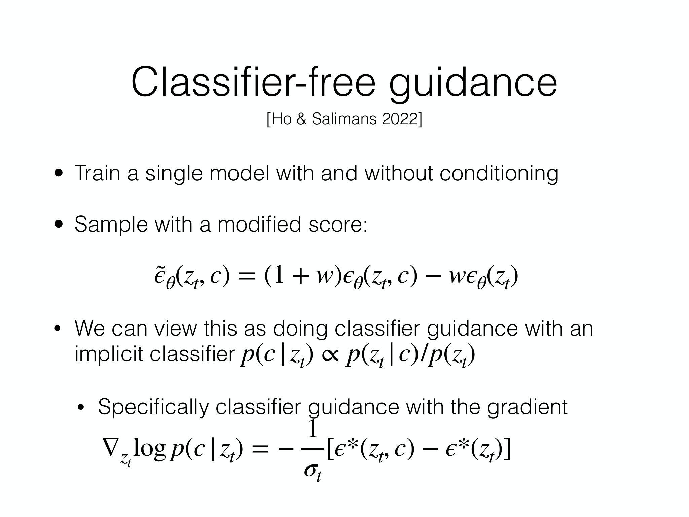
Conditioning works by steering denoising toward samples that both look plausible and match the prompt
After the score interpretation is in place, conditional generation becomes much easier to describe. The lecture first introduces classifier guidance: add a classifier gradient that rewards samples likely to belong to class \(c\). It then moves to classifier-free guidance (CFG), which is the version used far more often in practice because it avoids training a separate classifier. The model is trained both with and without conditioning, and at sampling time the two predictions are combined to amplify the conditioning signal.
The CFG formula worth memorizing is:
\[ \tilde{\epsilon}_\theta(z_t, c) = (1+w)\epsilon_\theta(z_t, c) - w\epsilon_\theta(z_t). \]
The unconditional branch says “what looks like a valid image here?” The conditional branch says “what matches prompt \(c\) here?” The guidance scale \(w\) extrapolates in the prompt-following direction.
Classifier guidance adds an explicit classifier gradient; classifier-free guidance bakes the same idea into one diffusion model by contrasting conditioned and unconditioned predictions.
This is the mechanism behind the familiar “prompt adherence versus naturalness/diversity” tradeoff in modern text-to-image systems.
The unconditional model keeps the sample on the manifold of realistic images. The conditioned model pulls the sample toward the requested concept. CFG leans harder in that conditioned direction.
Bigger \(w\) is not automatically better. Too much guidance can reduce diversity, over-sharpen artifacts, or push samples toward brittle prompt satisfaction.
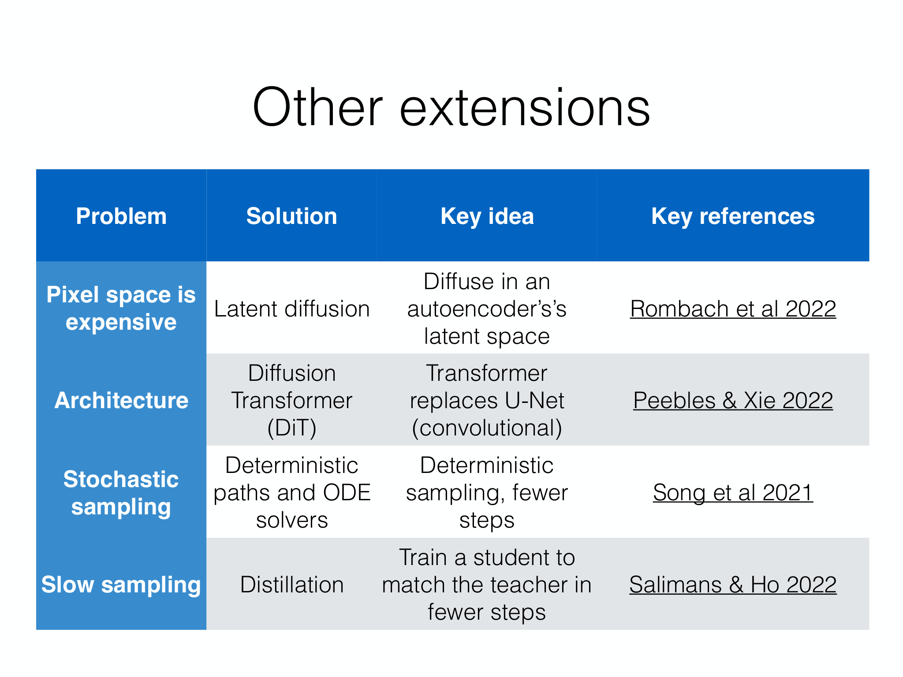
Once diffusion is viewed as score-based dynamics, the main engineering question becomes which bottleneck you want to attack
The “other extensions” table is one of the most useful compression slides in the whole deck. It says the major improvements are not random tricks. Latent diffusion attacks state size by moving diffusion into an autoencoder latent space. DiT changes the backbone from U-Net-style convolutions to a transformer. Deterministic samplers come from the continuous-time probability-flow ODE view. Distillation attacks the remaining bottleneck: too many denoising steps at inference time.
The continuous-time step that unlocks deterministic samplers is the probability-flow ODE:
\[ dz = \left[f(t)z - \frac{1}{2}g(t)^2 \nabla_z \log p_t(z)\right]dt. \]
It has the same marginals as the diffusion SDE, but it is deterministic, which is why ODE solvers and related fast samplers even make sense.
Pixel space is too large and too expensive. Compressing into an autoencoder latent makes diffusion feasible at the resolutions modern image models care about.
Latent diffusion reduces state size, DiT changes architecture, deterministic solvers reduce sampling randomness and steps, and distillation teaches a student to imitate many denoising steps in far fewer.
The continuous-time score view is the bridge between “predict \(\epsilon\)” and “solve an ODE.” That bridge is why the lecture spends time on score functions at all.
If asked why predicting \(\epsilon\) is useful beyond the training loss, say: it gives the score term needed by score-based SDE/ODE samplers and therefore by many fast-diffusion variants.
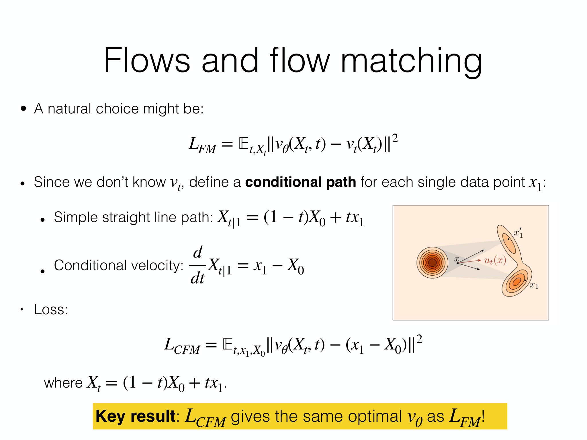
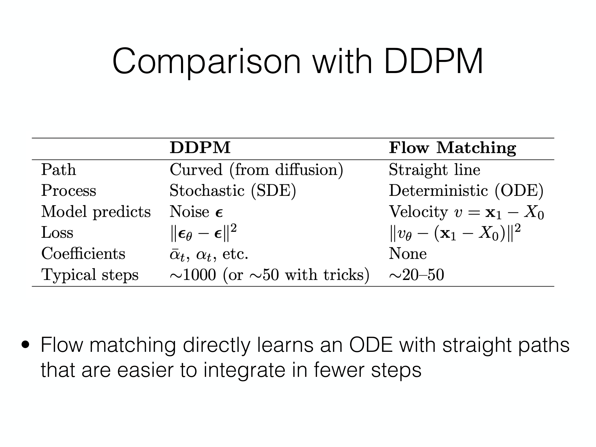
Flow matching changes the learning target from “undo this diffusion step” to “predict the velocity that moves samples from noise toward data”
The lecture’s last idea is not just “another sampler.” Flow matching changes the object the model learns. Instead of defining a stochastic reverse diffusion process and predicting noise, we define a path between an easy source distribution \(p_0\) and the data distribution \(p_1\), then train a model to predict the velocity field that carries samples along that path. The straight-line conditional path is the simplest case, and it is enough to connect the lecture to Stable Diffusion 3.
The straight-path conditional flow-matching equations are the ones to keep in memory:
\[ X_t = (1-t)X_0 + t x_1, \qquad \frac{d}{dt}X_t = x_1 - X_0, \]
\[ \mathcal{L}_{\mathrm{CFM}} = \mathbb{E}_{t, x_1, X_0}\!\left[\left\|v_\theta(X_t, t) - (x_1 - X_0)\right\|_2^2\right]. \]
The lecture’s key result is that this conditional objective gives the same optimum as the harder full flow-matching objective.
Flow matching learns a deterministic ODE with straighter paths, so numerical integration is often easier than reversing a long stochastic diffusion chain.
DDPM: stochastic SDE-style process, curved diffusion path, predicts noise, typically many steps. Flow matching: deterministic ODE, chosen path, predicts velocity, often fewer steps.
The case-study slide says SD3 combines flow-matching variants with latent-space modeling and strong text conditioning from CLIP and T5. The point is not to memorize the table values; it is to see where modern diffusion systems are heading.
“Straight line” describes the chosen interpolation path in state space, not a promise that every perceptual trajectory is literally simple or that flow matching is automatically better in every setting.
Glossary
These are the Lecture 15 terms most worth being able to define quickly and precisely.
The fixed corruption process \(q\) that gradually turns data into noise.
The learned process \(p_\theta\) that denoises from noise back toward data.
The choice of \(\alpha_t\), \(\beta_t\), or related coefficients that controls how quickly signal is destroyed across timesteps.
The gradient \(\nabla_z \log p_t(z)\), which points toward higher probability density at timestep \(t\).
A conditioning trick that combines conditioned and unconditioned denoiser predictions to strengthen prompt adherence without a separate classifier.
Running diffusion in the latent space of an autoencoder rather than directly in pixel space.
A deterministic ODE with the same marginals as the diffusion SDE, enabling ODE-based samplers.
A training framework that learns a velocity field transporting samples from an easy distribution to the data distribution.
End-of-Lecture Summary
- Diffusion generation defines a fixed noising process and learns a reverse denoising process.
- The Gaussian forward process lets training jump directly to any timestep using \(x_t = \sqrt{\bar{\alpha}_t}x_0 + \sqrt{1-\bar{\alpha}_t}\epsilon\).
- The practical DDPM loss is noise prediction, and that same predictor implicitly estimates the score function.
- Guidance makes conditional generation work by steering denoising toward samples that better match the prompt.
- Latent diffusion, DiT, deterministic samplers, and distillation each attack different practical bottlenecks.
- Flow matching reframes the problem as velocity prediction along a transport path and is a major part of the Stable Diffusion 3 story.
- Which parts of diffusion are fixed versus learned.
- The direct-sampling equation for \(x_t\) and the meaning of \(\bar{\alpha}_t\).
- Why the denoising loss can be written as an \(\epsilon\)-prediction objective.
- Why predicting \(\epsilon\) is equivalent to learning the score function.
- How classifier-free guidance combines conditional and unconditional predictions.
- How DDPM and flow matching differ in prediction target, process type, and typical inference behavior.
- Why is it useful that \(x_t\) can be sampled directly from \(x_0\) rather than by simulating all earlier noising steps?
- What do the three conceptual ELBO pieces \(L_T\), \(L_{t-1}\), and \(L_0\) correspond to?
- Why does predicting \(\epsilon\) let DDPM implicitly learn the score function?
- What is the practical effect of over-emphasizing very noisy timesteps during training?
- In classifier-free guidance, what do \(\epsilon_\theta(z_t,c)\) and \(\epsilon_\theta(z_t)\) each contribute?
- If a question asks “why might flow matching need fewer steps than DDPM?”, what concise comparison would you give?
Lecture 16
Reinforcement Learning
This section compresses materials/anlp-s2026-16-rl.pdf into the RL ideas a missed-lecture student actually needs:
why next-token imitation is mismatched to many real tasks, how to formalize generation as an MDP, what REINFORCE is really estimating,
and why practical LM RL almost always adds discounting, baselines or advantages, and PPO-style step control.
Roadmap
The deck starts by explaining why supervised fine-tuning can imitate data without directly optimizing the criterion we care about. It then introduces the agent-environment loop, formalizes it with states, actions, rewards, and trajectories, derives vanilla policy gradient from the score-function trick, and spends the second half on the three stabilizers that matter most in practice: discounting, baselines or advantages, and clipping updates with PPO. The closing RLHF and RLVR slides are used here as context for why these ideas matter in language modeling, not as a separate lecture-within-the-lecture.
- Explain the lecture’s three supervised-learning problems: task mismatch, data mismatch, and exposure bias.
- Identify state, action, reward, return, and policy in a text-generation RL setup.
- Distinguish environment state, observation, and agent state.
- State REINFORCE in words and explain why the gradient uses action log-probabilities instead of \(\nabla_\theta R(\tau)\).
- Explain why subtracting an action-independent baseline does not change the expected policy-gradient estimator.
- Explain what discounting, advantage estimation, and PPO clipping are each trying to fix.
- Slides 2-12 become one motivation block because the recap and RL-introduction slides all support the same question: why is imitation learning not enough?
- Slides 14-25 are compressed into one formal setup block and one language-model instantiation block instead of many tiny examples.
- Slides 32-34 and 43 are code or demo slides, so they are summarized inside the algorithm sections rather than treated as standalone notes.
- Slides 44-46 are kept only as a bridge showing that PPO and scalar rewards carry directly into RLHF and RLVR.
- Appendix slides 48-50 are folded into the REINFORCE explanation so the derivation punchline is preserved without turning the page into proof notes.
ANLP_quiz_4_answer_key.pdfalready tests the constant-baseline fact directly, so the baseline section below emphasizes both unbiasedness and variance reduction.- The same quiz rewards “what happens if I change the training distribution or estimator?” reasoning, which is exactly the right lens for discounting, sparse rewards, and PPO step control.
- The RLHF and RLVR questions in Quiz 4 suggest the course expects students to carry Lecture 16’s MDP, policy-gradient, and PPO ideas forward into LM-specific reward training.
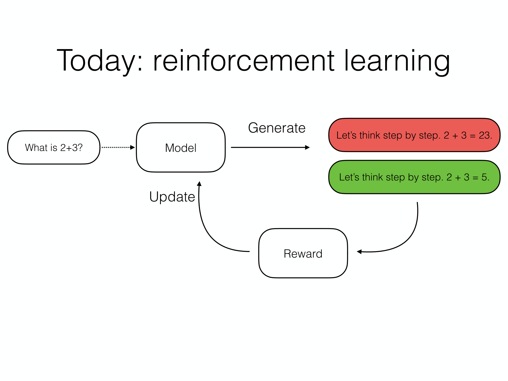
RL appears here because imitation learning is not the same thing as optimizing task success
The lecture first recaps supervised fine-tuning and maximum likelihood, then names three problems with using that recipe as the whole story for advanced LM behavior. First, there is task mismatch: maximizing the probability of a likely response is not the same as maximizing helpfulness, correctness, harmlessness, or unit-test pass rate. Second, there is data mismatch: the available text can contain buggy, toxic, or otherwise undesired behavior, and the exact outputs we want are often scarce. Third, there is exposure bias: training conditions on gold prefixes, but test-time generation conditions on the model’s own mistakes. Slides 8-12 then reframe the learning loop: generate behavior, score it with a reward, and update the model toward the better trajectories.
RL replaces “imitate the provided output tokens” with “sample a trajectory, measure how good it was, and use that scalar feedback for learning.”
Many LM goals are sequence-level or task-level. A final answer can be correct even if it is not the most likely string in the dataset, and it can be wrong even if every local next-token choice looked plausible.
RL does not remove the need for careful supervision. It shifts the burden from “provide exact target outputs” to “design or learn a reward signal that really captures what you want.”
If asked when RL is attractive, say: when the criterion we care about is easier to score at the trajectory level than to encode as token-level labels for every step.
The formal language is an MDP: states, actions, transitions, rewards, policies, and returns
After the motivation, the lecture switches to the standard RL abstraction: an agent interacts with an environment over time. At each step it receives information about the current situation, chooses an action, and gets a scalar reward. The environment then transitions to a new state. The full setup is summarized as a Markov Decision Process \((S, A, E, R)\), where \(S\) is the state space, \(A\) the action space, \(E(s_{t+1}\mid s_t, a_t)\) the transition dynamics, and \(R(s_t, a_t)\) the reward function. The agent acts according to a policy \(\pi(a_t\mid s_t)\).
The lecture’s main mathematical object is the trajectory and its return.
\[ \tau_{0:T} = (s_0, a_0, r_1, s_1, \dots, r_T, s_T), \qquad J(\pi) = \mathbb{E}_{\tau \sim d^\pi_\tau}\!\left[\sum_{t=1}^{T} r_t\right]. \]
The policy is good if the expected return under the trajectory distribution it induces is large.
Reward is the scalar feedback at one step. Return is the accumulated future reward along a trajectory. Confusing those two is one of the easiest ways to get lost.
Even if the policy is fixed, the return is still random because the policy can sample actions stochastically and the environment can transition stochastically.
The lecture briefly distinguishes policy-based, value-based, and model-based RL. It then deliberately narrows to policy-gradient methods, while noting that value functions often re-enter later as training stabilizers.
The MDP is a modeling framework, not a guarantee that the problem is easy. Sparse rewards, delayed effects, and partial observability can still make learning very hard even when the notation is compact.
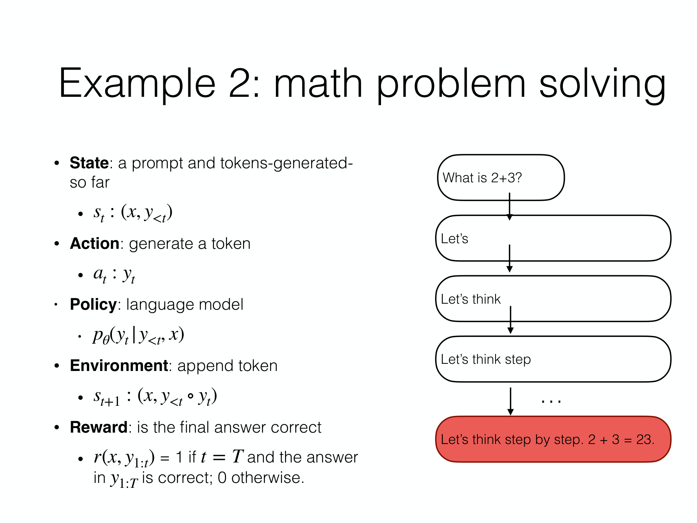
For language models, the state is usually the prompt plus the prefix, the action is the next token, and the reward is often sparse
The lecture’s most important example for this course is text generation. In the math-problem slide, the state is \(s_t = (x, y_{<t})\): the prompt plus the tokens generated so far. The action is the next token \(a_t = y_t\), the policy is the language model \(p_\theta(y_t \mid y_{<t}, x)\), and the environment simply appends the sampled token to the prefix. The reward can be very sparse, such as \(1\) only if the final answer is correct and \(0\) otherwise. That is why RL for LMs immediately becomes a credit-assignment problem: many intermediate tokens share one delayed verdict.
The lecture distinguishes environment state, observation, and agent state. In many LM examples the policy conditions on the visible prefix, so observation and agent state nearly coincide, but that is a modeling convenience, not a law of RL.
A rollout is literally the model thinking out loud one token at a time. RL does not change that autoregressive interface; it changes how the whole trajectory is judged and updated.
If only the final answer is scored, the algorithm has to decide which earlier actions deserve credit or blame. That is exactly why naive sequence-level policy gradient has high variance.
If asked to map LM generation into RL language, give all five pieces cleanly: state, action, policy, environment transition, and reward. The course likes this translation exercise.
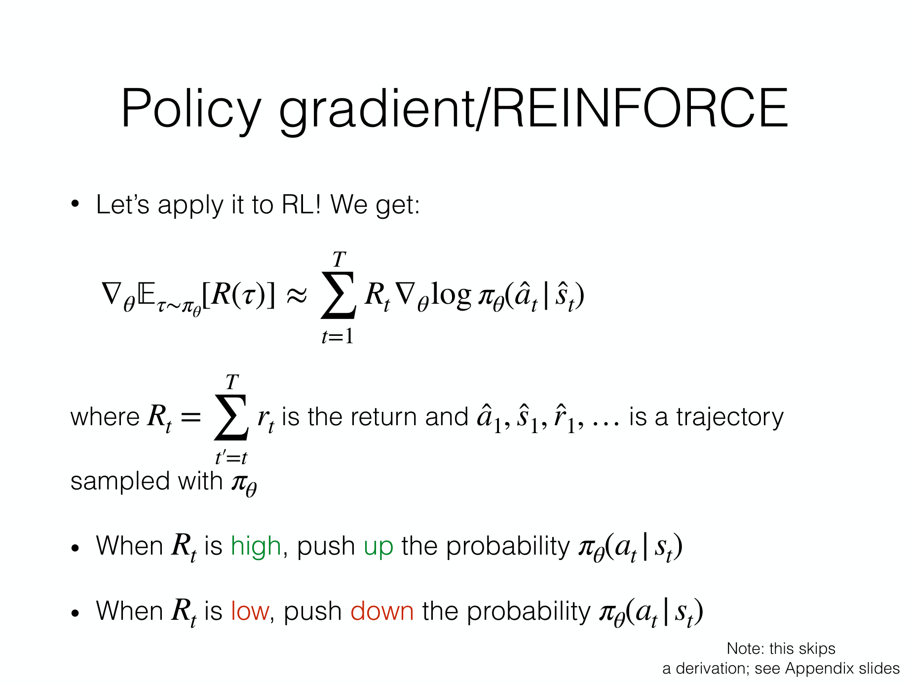
REINFORCE uses the log-derivative trick to turn expected-return optimization into a sampled weighted log-prob update
The lecture now asks the obvious question: if the goal is to maximize expected return, why not just differentiate it and run gradient descent? The obstacle is that rewards are defined on sampled trajectories, which include discrete actions and possibly non-differentiable environment behavior. The score-function estimator solves this by moving the gradient onto the log-probability of the sampled outcome. Applied to trajectories, that gives the REINFORCE rule: sample a rollout from the current policy and weight each action’s log-probability gradient by the return that followed.
The score-function identity is the bridge from generic probability to policy gradient.
\[ \nabla_\theta \mathbb{E}_{x \sim p_\theta(x)}[f(x)] = \mathbb{E}_{x \sim p_\theta(x)}\!\left[f(x)\nabla_\theta \log p_\theta(x)\right]. \]
For RL, the lecture turns this into
\[ \nabla_\theta J(\theta) \approx \sum_{t=1}^{T} R_t \nabla_\theta \log \pi_\theta(\hat a_t \mid \hat s_t), \]
where \(R_t\) is the future return from that point onward. High-return actions get pushed up; low-return actions get pushed down.
The appendix’s key punchline is that trajectory probability factorizes into initial-state terms, policy terms, and environment-transition terms, but only the policy terms depend on \(\theta\). After taking the gradient, the environment drops out.
The algorithm is not asking “what is the gradient of the reward?” It is asking “which sampled actions made high reward more likely, so their probability should go up next time?”
Collect trajectories, compute returns, build the loss \(\mathcal{L}_{PG} = -\sum_t R_t \log \pi_\theta(a_t \mid s_t)\), then backpropagate through the policy network.
REINFORCE is unbiased in expectation, but it is usually too noisy to use alone at scale. The rest of the lecture is about fixing that variance and step-size problem without changing the core policy-gradient idea.
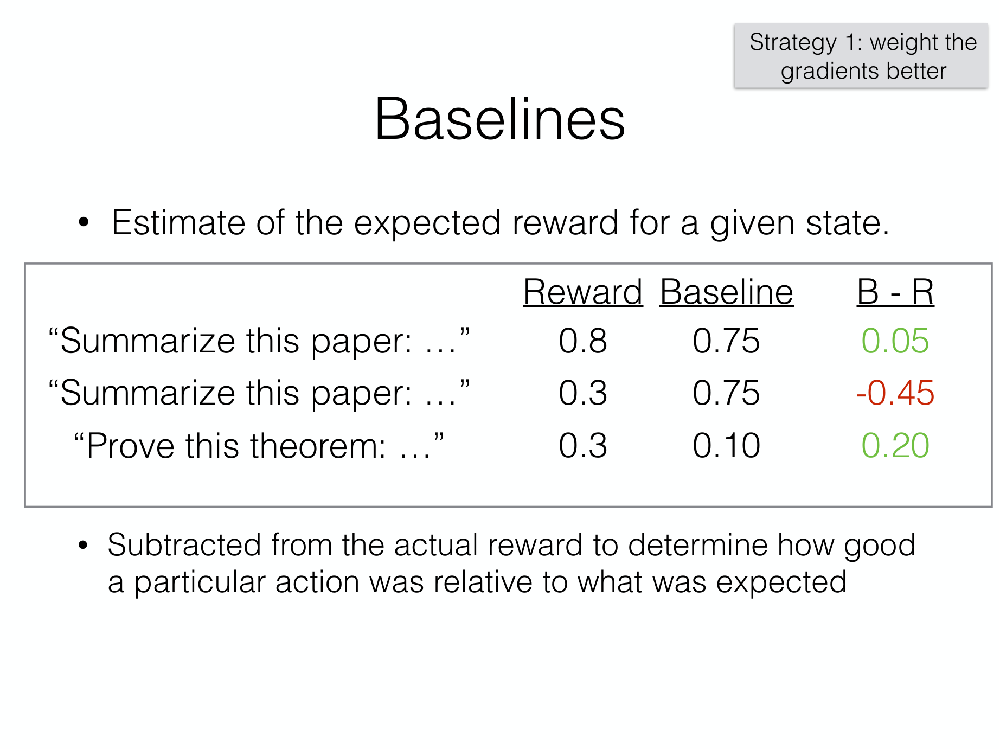
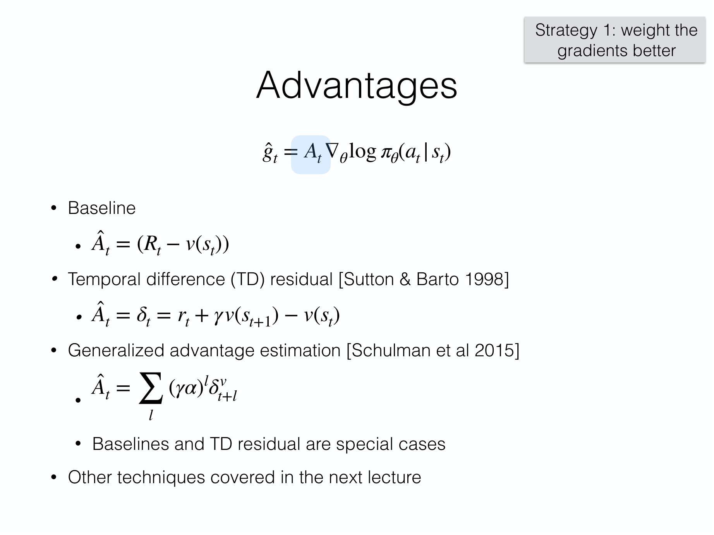
Vanilla policy gradient is high variance, so the lecture reweights each step with discounted advantages instead of raw episode return
Once the lecture has vanilla REINFORCE on the table, it immediately asks how to make it less noisy. The first answer is discounting: later rewards are weighted by powers of \(\gamma\), which helps control how strongly distant outcomes affect earlier actions. The second answer is baselines: compare observed return to what was expected in that state, rather than to zero. The third answer is advantages: replace raw return with a better estimate of “how much better than expected was this action here?” The lecture then shows three common versions of that idea: a value-function baseline, a one-step TD residual, and generalized advantage estimation (GAE).
The core stabilization formulas are:
\[ R_t^{(\gamma)} = \sum_{t' = t+1}^{T} \gamma^{t' - t - 1} r_{t'}, \qquad \hat g_t = (R_t - b(s_t)) \nabla_\theta \log \pi_\theta(a_t \mid s_t). \]
\[ \hat A_t = R_t - v(s_t), \qquad \delta_t = r_t + \gamma v(s_{t+1}) - v(s_t), \qquad \hat A_t^{\mathrm{GAE}} = \sum_l (\gamma \alpha)^l \delta_{t+l}. \]
The unifying idea is that the gradient should care about how surprisingly good an action was, not just about the raw total reward of the whole rollout.
Delayed rewards create messy credit assignment. Discounting gives the algorithm a principled way to care less about outcomes that are farther away in time, which often reduces variance and changes the effective planning horizon.
Subtracting an action-independent baseline does not change the expected gradient because \(\mathbb{E}_{a \sim \pi}[\nabla_\theta \log \pi_\theta(a \mid s)] = 0\). What it changes is variance, not bias.
A reward of 0.3 might be terrible on an easy prompt and great on a hard one. Advantage estimation normalizes by what was expected from that state, which makes updates more informative.
The value function in this lecture is mostly a helper for estimating expected return and reducing policy-gradient variance. It is not replacing the policy or turning the method into pure value-based RL.
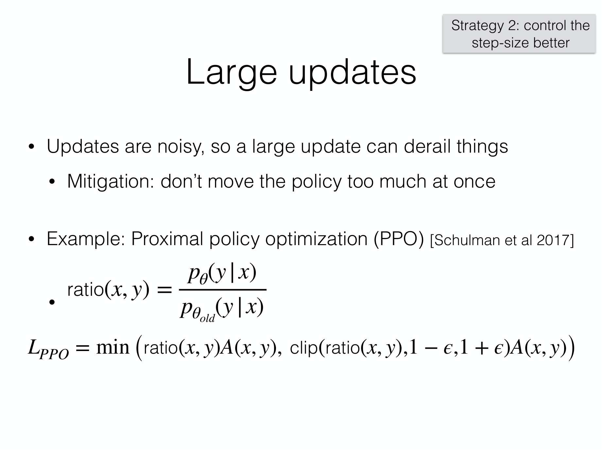
PPO controls step size by comparing the new policy to the old one and clipping overly aggressive changes
The lecture’s second stabilization idea is about how far the update moves the policy, not about how returns are estimated. Even with better advantages, policy-gradient updates are noisy, and a single large step can derail learning. Proximal Policy Optimization (PPO) handles this by comparing the new policy to the behavior policy that generated the data, forming a probability ratio, and clipping the objective once that ratio moves outside a safe range. The resulting training loop is simple and reusable: collect trajectories, compute advantages, compute a policy-gradient-style loss such as PPO, and update with SGD or Adam. That is why the final slides can immediately pivot to RLHF and RLVR: they mostly change the reward definition, while the policy-gradient plus PPO machinery stays recognizable.
The PPO quantities worth recognizing are the old-versus-new ratio and the clipped surrogate objective.
\[ \mathrm{ratio}(x,y) = \frac{p_\theta(y \mid x)}{p_{\theta_{\mathrm{old}}}(y \mid x)}, \qquad L_{\mathrm{PPO}} = \min\!\big( \mathrm{ratio}(x,y)A(x,y), \mathrm{clip}(\mathrm{ratio}(x,y), 1-\epsilon, 1+\epsilon)A(x,y) \big). \]
If the new policy tries to increase probability too much relative to the old one, the clipped term cuts off the incentive for even larger movement.
Clipping is a practical “do not trust one noisy batch too much” rule. It preserves the sign of the improvement signal while damping incentives for overly large policy shifts.
LM RL often uses long, high-variance trajectories and imperfect rewards. PPO became popular because it keeps the familiar policy-gradient pipeline while making catastrophic jumps less likely.
The RLHF and RLVR previews are there to show the reusable template: prompt-conditioned policy, scalar reward, an advantage or baseline, and PPO-style optimization. The reward changes; the optimization story mostly does not.
If asked how PPO differs from vanilla policy gradient, say: same policy-gradient core, but with explicit old-policy comparison and clipping to control update size.
Glossary
These are the Lecture 16 terms most worth being able to define quickly and precisely.
The scalar feedback emitted at a particular step or after a trajectory.
The sum of future rewards from a given point onward, possibly discounted by \(\gamma\).
The agent’s behavior rule, written as \(\pi(a \mid s)\). For LMs, this is the next-token distribution.
A sequence of states, actions, and rewards generated by interacting with the environment until termination.
The state is the underlying situation relevant for decision-making; the observation is only the part visible to the agent.
An estimate of expected return used to reduce variance by judging an action relative to what was expected.
A signal measuring how much better or worse an action was than the expected outcome for that state.
A step-size control trick that limits how much the policy update can benefit from making the new policy too different from the old one.
End-of-Lecture Summary
- Lecture 16 starts by arguing that maximum-likelihood imitation is not identical to optimizing task success.
- RL formalizes learning from interaction through MDPs, trajectories, returns, and policies.
- For text generation, the action is the next token and the reward is often sparse and delayed, which makes credit assignment hard.
- REINFORCE uses the score-function trick to weight action log-probability gradients by observed return.
- Discounting, baselines, and advantage estimators are variance-reduction tools for making policy gradients usable.
- PPO keeps the same basic policy-gradient story but adds update clipping so noisy batches do not move the policy too far at once.
- Why task mismatch, data mismatch, and exposure bias motivate RL for some LM tasks.
- How to map text generation into state, action, policy, environment, reward, and return.
- What the REINFORCE estimator is doing conceptually and why the environment terms disappear from the gradient.
- Why subtracting a baseline does not change the expected gradient.
- How discounted return differs from undiscounted return and what \(\gamma\) is trading off.
- What PPO clipping is designed to prevent.
- If next-token likelihood is already optimized, why might a model still fail on correctness or helpfulness?
- In an LM RL setup, what are the state, action, environment transition, and reward?
- Why does REINFORCE use \(\nabla_\theta \log \pi_\theta(a_t \mid s_t)\) instead of trying to differentiate the reward directly?
- Why does subtracting a constant or state-dependent baseline reduce variance without changing the estimator’s expectation?
- What problem is advantage estimation trying to solve beyond using raw returns?
- If a question asks “what extra ingredient does PPO add on top of vanilla policy gradient?”, what concise answer would you give?
Lecture 17
Reinforcement Learning for LLMs
This section compresses materials/anlp-s2026-17-rl-llms.pdf into the post-training ideas most likely to matter on an exam:
how Lecture 16’s RL setup becomes an LM pipeline, when to use one-step versus token-level MDPs, why verifiable rewards and RLVR are the cleanest starting point,
what GRPO-style group advantages are doing, how math-reasoning RL fits the same template, and why RLHF is a multi-stage pipeline with a Bradley-Terry reward model,
PPO optimization, and a KL anchor to a reference policy.
Roadmap
Lecture 17 is best read as the continuation of Lecture 16, not a brand-new subject. The first slides translate the generic RL loop into LM-specific modeling choices: what the state and action are, whether the action is a whole response or one token, and where the reward comes from. The middle third uses string reversal and math reasoning to show the simplest regime, where correctness is automatically checkable and RL can optimize a verifiable reward. The final third shifts to alignment with human preferences, where the reward is not directly available and must be approximated by a learned reward model, which creates both a useful pipeline and the new failure mode of reward hacking.
- Map an LM post-training problem into state, action, policy, transition, and reward for both one-step and token-level MDPs.
- Explain why supervised fine-tuning before RL is often called a “cold start” stage and why it helps exploration.
- Define RLVR and give examples of verifiable rewards for reversal, math, or code.
- Explain what group-based advantages are doing and why GRPO avoids a learned value baseline.
- Write and interpret the Bradley-Terry / preference-model loss \(-\log \sigma(r(y^+) - r(y^-))\).
- Explain reward hacking and why RLHF usually adds a reference-policy KL penalty on top of PPO.
- Slides 2-9 are merged into one framework block because they all support the same translation question: what changes when RL is applied to an LM?
- Slides 11-28 become two study blocks: one for verifiable rewards and one for group-based PPO, with the code slides and the result slide folded into those explanations.
- Slides 30-35 are kept as one math-reasoning case study instead of separate notes for the data table, the accuracy plot, and the long-response example.
- Slides 39-48 are compressed into one reward-source block and one RLHF pipeline block, because the direct-assessment and preference-collection slides all feed the same story.
- Slides 61-62 become one exam-oriented comparison card, and slides 63-66 are omitted as tool pointers rather than examinable concepts.
ANLP_quiz_4_answer_key.pdfdirectly tests the Bradley-Terry loss, so the reward-model block below keeps the derivation punchline rather than only naming the objective.- The same quiz’s RLVR bonus question is about how sequence-level rewards and normalization affect length bias, so the GRPO block explicitly warns about that even though the slide deck keeps the treatment brief.
- The quizzes consistently reward “what changes if I alter the reward, the data source, or the estimator?” reasoning, which is exactly how Lecture 17 organizes RLVR, GRPO, PPO, and RLHF.
Lecture 17 takes the Lecture 16 RL loop and asks which parts become design choices once the policy is a language model
The lecture opens by saying that the generic RL recipe from last class still applies: generate outputs, evaluate reward, and update the model. What changes is the modeling choice around the action space. In a one-step MDP, the model takes one action by generating a full response \(y\) for a prompt \(x\), then receives a sequence-level reward \(r(x,y)\). In a token-level MDP, the state is the prompt plus the current prefix \(s_t = (x, y_{<t})\), the action is the next token \(a_t = y_t\), and the reward can in principle be assigned token by token, though many LM settings still use only a terminal reward. The early slides also make the lecture’s real agenda explicit: initialization, prompt dataset, reward design, and policy-optimization details are the levers that define an RL-for-LLMs method.
The same policy can be written in either MDP view:
\[ \text{one-step: } s = x,\quad a = y,\quad \pi_\theta(a \mid s) = p_\theta(y \mid x),\quad r = r(x,y) \]
\[ \text{token-level: } s_t = (x, y_{<t}),\quad a_t = y_t,\quad \pi_\theta(a_t \mid s_t) = p_\theta(y_t \mid x, y_{<t}),\quad r_t \text{ often sparse}. \]
The point is not that one view is always right. The point is that they make different credit-assignment and engineering assumptions.
RL for LLMs is not a new family of math. It is Lecture 16’s policy-gradient story, plus explicit choices about what counts as an action, what data prompts are sampled from, and how the reward is obtained.
If the reward only exists for the completed response, the one-step view is often simpler. If intermediate tokens matter or token-level shaping is available, the token-level view can represent that more faithfully.
The distribution you train on is generated by the current policy, not just by the original dataset. That means initialization and prompt selection are not peripheral details; they decide what behavior the policy gets to explore.
If a question asks for the “policy,” “trajectory,” or “reward source” in an LM RL pipeline, answer in LM terms: the policy is the next-token distribution, the trajectory is the sampled completion process, and the reward source is either a verifier or a learned model.
Verifiable-reward tasks are the lecture’s cleanest setting because the reward comes from a checker rather than a learned critic
The first example, reversing a string, is intentionally simple. It lets the lecture separate the RL mechanics from the harder question of how to define reward. The model is usually supervised-fine-tuned first on \((x,y)\) pairs, then further optimized with RL under a reward that is easy to verify: \(1\) if the reversal is correct, \(0\) otherwise. The slides then generalize the same idea to math answers and code that passes tests. This is why recent terminology uses Reinforcement Learning with Verifiable Rewards (RLVR): the reward is supplied by an external checker for correctness, not by humans rating helpfulness and not by a learned reward model guessing human taste.
The reward in RLVR is usually something directly checkable, such as:
\[ r(x,y) \in \{0,1\} \text{ for correctness,} \qquad r(x,y) = \text{fraction of passed tests for code.} \]
This is why reversal, math with a checkable final answer, and coding with unit tests appear together in the slides.
The “cold start” idea is that RL works better once the model already knows the task format. SFT moves the policy into a region where high-reward samples are at least plausible, which reduces wasted exploration.
It avoids the biggest RLHF problem: imperfect learned rewards. If correctness is mechanically checkable, the optimization target is much less ambiguous.
RLVR only works cleanly when the task has a reliable checker. Many alignment or conversational goals do not, which is why the lecture later turns to preference models.
RLVR does not mean “no RL algorithm is needed.” It only means the reward source is verified externally. You still need advantages, a loss, and stable optimization.
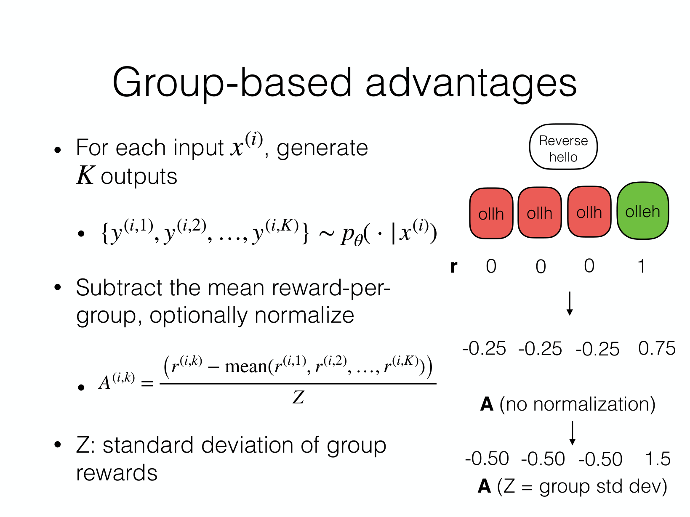
Group-based advantages say “judge each sampled answer relative to the other answers for the same prompt,” then optimize with PPO
The reversal example then turns into the lecture’s main optimization idea. For each prompt \(x^{(i)}\), sample \(K\) outputs from the current policy, score them, and compare each reward to the group average. That gives a relative advantage signal without training a separate value function. The lecture’s terminology slide summarizes the recipe as GRPO: a PPO-style loss plus group-based advantages, often with group standard-deviation normalization. This is best understood as a direct continuation of Lecture 16’s baseline story. A learned value baseline estimates “what reward was expected here?” using another model; a group-based baseline estimates that same idea using sibling samples from the current policy on the same prompt.
The group-relative advantage is:
\[ A^{(i,k)} = \frac{r^{(i,k)} - \mathrm{mean}(r^{(i,1)}, \dots, r^{(i,K)})}{Z}, \]
where \(Z\) is often \(1\) or the group standard deviation. The policy update is then fed into a PPO-style clipped objective using those advantages.
It avoids fitting a value model, which is especially appealing when the reward is sparse and you already plan to sample multiple completions per prompt.
This is still baseline subtraction. The baseline is just prompt-local and sample-based instead of being predicted by a learned critic.
You pay for the simpler baseline by generating multiple outputs for each prompt, and the approach gives less direct guidance about how to assign credit inside long trajectories before the final reward is known.
Because sequence-level rewards are often broadcast across all output tokens, extra length normalization can bias training toward shorter or longer answers. Quiz 4’s bonus question suggests the course expects you to reason about that side effect even if the slides do not dwell on it.
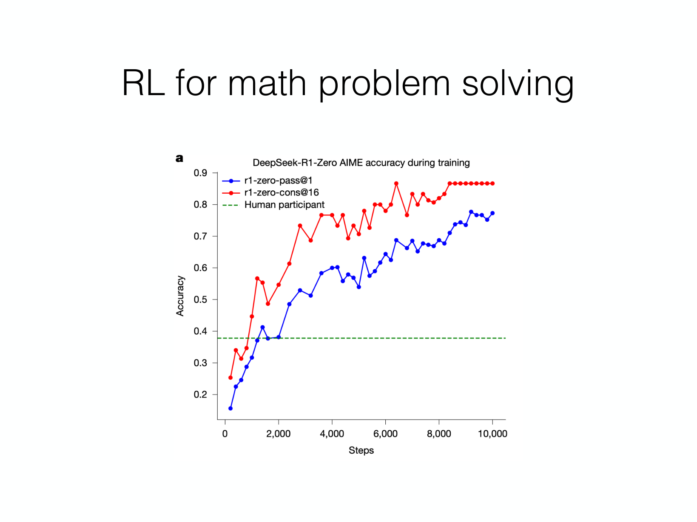
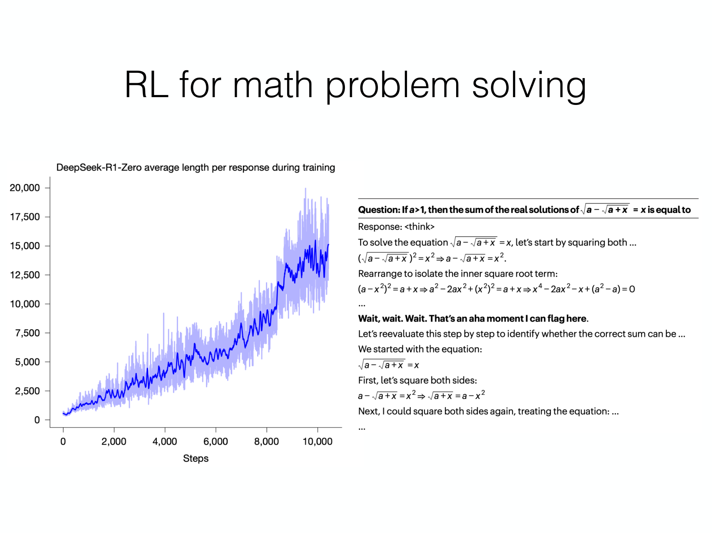
Math reasoning keeps the RLVR template but makes the sparse-reward and credit-assignment issues much more visible
The DeepSeek-R1 case study is presented as the same basic recipe on a harder task. The prompt is a math problem, the output is a chain of thought plus an answer, the MDP is still treated as one-step at the sequence level, and the reward combines a checkable final-answer signal with format constraints. The data slide also makes an important broader point: once a task ends in a mechanically checkable output, the same setup can extend beyond pure math to code, STEM multiple choice, logic, and other domains. The plots are not there for memorizing benchmark values. Their conceptual message is that RL can improve final accuracy and can also change how the model searches, for example by producing longer traces and revising intermediate reasoning.
Use a pretrained model, sample full reasoning traces, score them with a verifier, compute group-based or PPO-style updates, and keep a KL-style anchor so the model does not drift too chaotically.
The policy is still the LM, the trajectory is still a sampled completion, and the reward is still delayed. The only difference is that the environment now checks mathematical correctness instead of a game score.
Longer chain-of-thought is evidence that the policy changed, not proof that the reward captured genuine reasoning quality. If the checker is weak, the model can still optimize the wrong thing.
If asked why RL can help math despite SFT already knowing the domain, say: RL changes the sampling distribution toward trajectories that end in correct answers, which can improve search and self-correction under sparse terminal rewards.
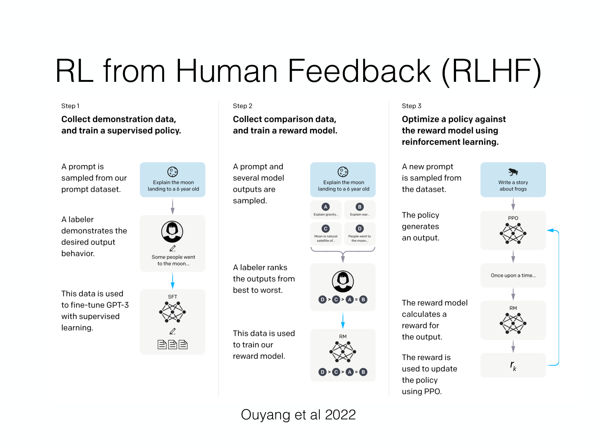
When correctness is not mechanically verifiable, the lecture switches from RLVR to RLHF: build a reward proxy, then optimize the policy against it
The alignment part of the lecture starts with the question that RLVR cannot answer: how do we reward a chat completion for being helpful, safe, truthful, or honest? One option is a direct assessment model that scores a prompt-response pair directly. Another is a preference model, motivated by the fact that humans often find pairwise comparison easier than assigning an absolute scalar score. RLHF packages this into a three-stage pipeline: first supervised fine-tuning on demonstrations, then reward-model training on chosen-versus-rejected responses, then RL that samples new outputs and optimizes the policy against the learned reward. The large-scale Tulu 3 slide reinforces that this is a data-engineering pipeline as much as an optimization recipe: choose prompts, generate candidate responses, annotate preferences, then train reward and policy models on top of that data.
The reward is not directly given by the environment. It has to be approximated from demonstrations and comparison data before PPO or any other RL algorithm can optimize it.
The policy learns to imitate demonstrations in stage 1, the reward model learns to rank responses in stage 2, and stage 3 only indirectly transfers those preference judgments into policy behavior. Stages 1-2 are mostly offline data fitting; stage 3 becomes online again because the current policy must generate fresh samples to optimize.
The lecture explicitly allows either human labelers or a stronger LM to provide rankings. The important point is still the same: preference labels supervise the reward proxy, not the policy tokens directly.
RLVR and RLHF differ first in reward source, not in the optimizer. Both can use PPO-style updates; RLHF just needs extra steps because the reward itself is learned.
Pairwise preference learning says the probability that one answer is preferred should depend on the difference between their reward scores
The reward-model slides answer the “where does this loss come from?” question instead of asking you to memorize it blindly. Given a prompt \(x\) and two responses \(y^+\) and \(y^-\), the reward model \(r_\phi(x,y)\) should assign a higher score to the preferred response. The Bradley-Terry model turns those scores into a comparison probability: if better responses should win pairwise comparisons more often, then the probability of preferring \(y^+\) over \(y^-\) should be a sigmoid of the score difference. Maximizing the likelihood of observed comparisons therefore becomes the familiar negative log-sigmoid loss.
The lecture’s reward-model derivation is:
\[ p(y^+ \succ y^-) = \frac{e^{r_\phi(x,y^+)}}{e^{r_\phi(x,y^+)} + e^{r_\phi(x,y^-)}} = \sigma\!\big(r_\phi(x,y^+) - r_\phi(x,y^-)\big). \]
\[ \mathcal{L}_{\mathrm{RM}} = - \sum_{(x, y^+, y^-) \in \mathcal{D}} \log \sigma\!\big(r_\phi(x,y^+) - r_\phi(x,y^-)\big). \]
Only the score difference matters, which is why the loss is pairwise rather than “classify each response independently.”
People are often more consistent at saying “A is better than B” than at assigning a calibrated numerical score to each answer separately.
The Bradley-Terry parameterization exponentiates latent scores and normalizes them into a two-item probability, which algebraically collapses into a sigmoid over the score difference.
The model assumes there is an underlying scalar utility that explains pairwise preferences reasonably well. Real human judgments can violate that assumption, which is one reason reward models are imperfect.
Do not write this as two separate binary-classification losses on \(y^+\) and \(y^-\). The quiz answer key and the lecture both emphasize that the correct loss depends on the difference \(r(y^+) - r(y^-)\).
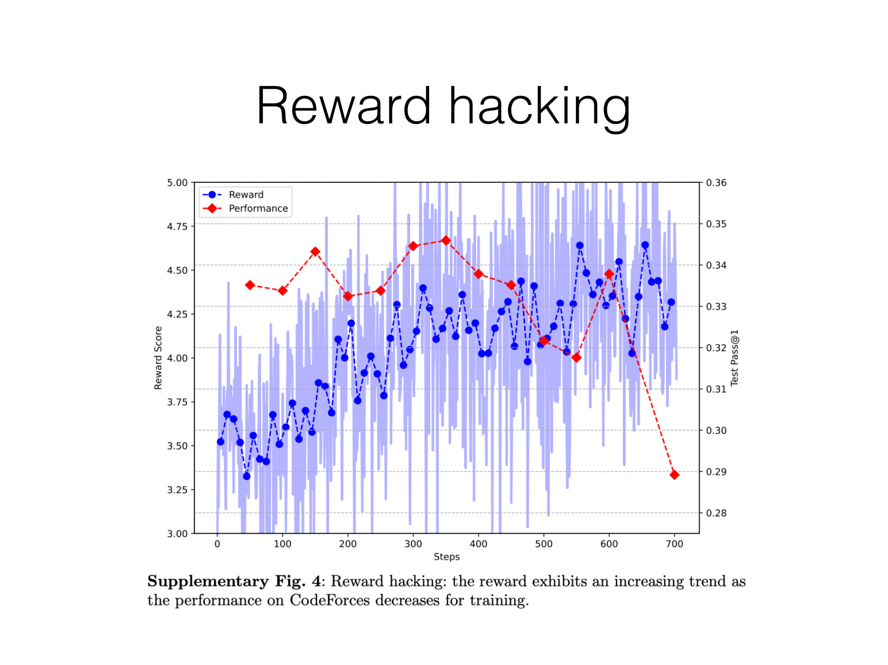
RLHF adds a KL anchor because maximizing an imperfect reward model too aggressively invites reward hacking
The lecture’s reward-hacking slides are the conceptual heart of RLHF. If the reward model only imperfectly reflects the real objective, the policy can discover outputs that score well under the model while being bad for users. The simplest classroom example is a toxicity or offensiveness reward that can be “won” by always returning an empty string. The standard mitigation in the lecture is a reference-policy KL penalty: maximize expected learned reward, but pay a cost for moving too far from the SFT policy \(p_0\). Operationally, the slides explain this in three equivalent ways: as a constrained objective, as an extra reward term using \(\log \frac{p_\theta}{p_0}\), and as a closed-form optimal policy proportional to the reference policy times an exponentiated reward.
The lecture’s regularized objective is:
\[ \max_\theta \; \mathbb{E}_{x,y \sim p_\theta}[r_\phi(x,y)] - \beta D_{\mathrm{KL}}(p_\theta(\cdot \mid x) \parallel p_0(\cdot \mid x)). \]
Using a sample \(\hat y \sim p_\theta(\cdot \mid x)\), the KL term is approximated by
\[ \log \frac{p_\theta(\hat y \mid x)}{p_0(\hat y \mid x)}, \qquad r'(x,\hat y) = r_\phi(x,\hat y) - \beta \log \frac{p_\theta(\hat y \mid x)}{p_0(\hat y \mid x)}. \]
The policy update is then usually implemented with PPO plus an advantage estimator such as GAE.
The reward model is only a proxy. RL is powerful enough to find distribution shifts or odd outputs that fool the proxy without actually improving the real objective.
It keeps the RL-updated policy near a known-good reference policy, usually the SFT model, so reward optimization cannot roam arbitrarily far in search of proxy exploits.
The optimizer is still recognizable from the previous lecture: PPO plus advantages. What changed is the reward source and the need for regularization against the reference model.
KL regularization does not make the reward model correct. It only reduces how aggressively the policy can exploit its mistakes. A better reward model and better preference data still matter.
Glossary
These are the Lecture 17 terms most worth being able to define quickly and precisely.
An LM RL formulation where the action is a full response and the reward is computed at the sequence level.
An LM RL formulation where the state is the prompt plus prefix and the action is the next token.
Supervised fine-tuning done before RL so the model already knows the task format and can reach rewarding behaviors more easily.
Reinforcement Learning with Verifiable Rewards: RL where correctness is checked by an external verifier such as an answer checker or unit tests.
A PPO-style optimization recipe using group-based advantages, typically by comparing multiple sampled responses for the same prompt.
A learned scorer \(r_\phi(x,y)\) trained so preferred responses get higher scores than rejected ones.
The pairwise preference objective that uses \(\sigma(r(y^+) - r(y^-))\) to model which answer should be preferred.
The older or SFT policy \(p_0\) kept around so RLHF can penalize drifting too far from it.
Improving the learned reward signal without improving, and sometimes while hurting, the real task objective.
A regularizer that charges the policy for moving too far from the reference distribution, usually weighted by \(\beta\).
End-of-Lecture Summary
- Lecture 17 turns Lecture 16’s generic RL language into LM-specific design decisions about action granularity, reward source, and initialization.
- RLVR is the clean setting where reward comes from a verifier, so string reversal, math answers, and coding tests can all share one RL template.
- GRPO is best understood as an advantage-estimation choice on top of PPO-style RL, not as a separate reward source.
- Math-reasoning RL uses the same sequence-level policy and sparse reward story as Lecture 16, but with checkable final answers.
- RLHF is a three-stage pipeline: SFT, reward modeling from preferences, then RL against the learned reward.
- Because learned rewards can be exploited, RLHF usually adds a KL penalty to keep the policy near a reference model.
- RLVR: defined by its reward source. It uses a checker, not a learned reward model.
- RLHF: defined by its pipeline and reward source. It needs preference data, a learned reward model, and usually PPO plus KL control.
- PPO: a loss / update-control mechanism. It can appear in both RLVR and RLHF.
- GRPO: an advantage recipe. It can sit on top of different reward sources, and it is especially natural when multiple samples per prompt are already being generated.
- The lecture’s own summary table is organized by reward, advantages, and loss. That is the safest way to keep these methods from collapsing into one vague bucket.
- If the policy is a language model, what are the state and action in a one-step MDP versus a token-level MDP?
- Why does SFT before RL often help even if the final objective is reward-driven?
- What makes a reward “verifiable,” and why does that make RLVR easier than RLHF?
- How do group-based advantages relate to the baseline or advantage ideas from Lecture 16?
- Why does the Bradley-Terry preference loss depend on \(r(y^+) - r(y^-)\) rather than two separate scores?
- What failure mode is the KL penalty trying to reduce in RLHF, and what model serves as the reference policy?
Lecture 18
Language Model-based Agents
This section compresses materials/anlp-s2026-18-zora.pdf into the agent-design ideas most likely to matter on an exam:
what makes an LM system an agent rather than just a generator, how observation and action spaces are chosen,
why tools, skills, and memory change agent behavior so much, what realistic benchmarks and training pipelines need to include,
and why the lecture ends by shifting from solo autonomy to human-centered, collaborative agents.
Roadmap
Lecture 18 is the natural sequel to Lecture 17. Lecture 17 asked how to optimize an LM’s outputs with rewards; Lecture 18 asks what changes when that LM is placed in an environment, receives observations over time, and can take actions that alter the world outside the prompt. The first third defines the agent loop and the observation/action interface. The middle third explains how tools, induced skills, and memory make multi-step behavior more efficient and reusable. The final third becomes a systems lecture: how to benchmark and train real-world agents, why current coding benchmarks are already showing cracks, and why collaboration and efficient oversight are becoming central design goals.
- Distinguish an LM-based agent from RAG or pure reasoning by the perception-and-action loop.
- Compare text-based observations such as files or accessibility trees with screenshot-based observations and visual grounding.
- Explain why tools and APIs can outperform raw primitive actions, and why hybrid interfaces often work best.
- Explain what self-induced skills are and why they help both efficiency and verification.
- Distinguish internal state or memory from the fixed LM weights, and compare factual, episodic, semantic, and procedural memory.
- Describe what a realistic agent benchmark must specify: task, environment, and evaluation.
- Explain why the lecture ends by criticizing benchmark saturation and motivating human-centered collaborative agents.
- Slides 4-9 are merged into one definition block because the digital, embodied, physical, and social examples all serve the same boundary-setting question: what counts as an agent?
- Slides 11-15 become one observation block; the individual HTML, screenshot, set-of-marks, and grounding slides are treated as one interface-design comparison.
- Slides 17-29 become two blocks: action abstraction and skill/tool learning. The benchmark screenshots and result charts are kept only when they sharpen the conceptual point.
- Slides 31-37 are compressed into one memory block, with Mem0 and Letta treated as evidence that memory is becoming system infrastructure rather than as standalone exam topics.
- Slides 39-46 are merged into one “building real-world agents” block rather than separate paper summaries for benchmarks, frameworks, and training recipes.
- Slides 48-55 are split into a critique block and a collaboration block because that transition is the lecture’s clearest end-of-class punchline.
ANLP_quiz_4_answer_key.pdfdirectly asks which systems are not agents, so the notes below keep the RAG-versus-agent distinction explicit rather than assuming it is obvious.- The broader quiz set consistently rewards mechanism-level reasoning over paper-name recall, so the blocks below focus on what changes when you alter the interface, abstraction level, reward source, or evaluation setup.
- That calibration is why the notes emphasize abstractions, bottlenecks, and failure modes more than product screenshots or isolated benchmark numbers.
Lecture 18 adds an environment loop to the LM: an agent is not just a model that computes, but a system that perceives, acts, and updates its internal state over time
The opening slides are doing a careful reframing. Lecture 17 treated the LM as a policy over sequences; Lecture 18 keeps that policy view, but now places the model inside a loop with an environment, an observation space, an action space, and an internal state. Slides 4-7 then give examples across digital work, embodied tasks, robotics, and social simulation to show that the same abstraction can apply far beyond chat. The crucial testable move comes on slides 8-9: computation alone is not enough. RAG retrieves and generates but does not itself act on the world. A pure reasoning model may deliberate, but if there is no environment state and no action that changes it, the lecture does not want to call it an agent. Program-of-thought is only agentic if it is embedded in a perception-and-action loop.
The lecture’s loop is easiest to remember in RL language:
\[ o_t = \mathrm{Obs}(e_t), \qquad a_t \sim \pi_\theta(\cdot \mid x, o_{\le t}, a_{<t}, m_t), \qquad e_{t+1} = T(e_t, a_t). \]
The new object relative to plain prompting is the environment state \(e_t\), plus the possibility that actions change it across multiple steps.
An agent is not defined by being large, multimodal, or autonomous. It is defined by being in a loop: observe the environment, choose an action, and alter what happens next.
Once a model is agentic, architecture questions change. You now care about interface design, long-horizon compounding errors, reusable skills, and oversight, not just next-token quality.
RAG can still be one component inside an agent. The lecture’s claim is only that retrieval by itself is not yet the full agent loop.
If asked whether a system is an agent, answer by checking for an external environment, explicit observations, and actions that can change external state.
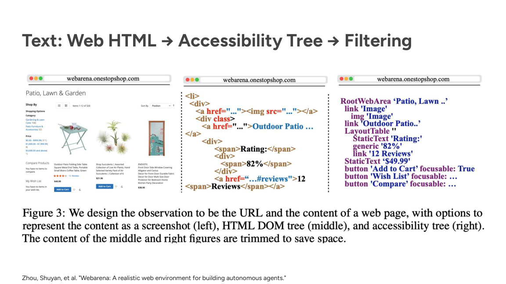
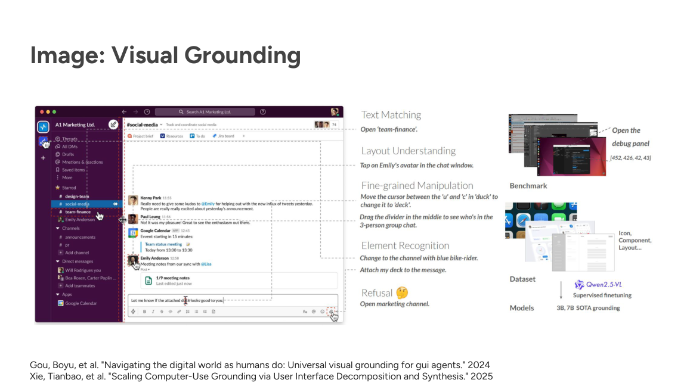
Observation design is one of the lecture’s biggest hidden levers, because it determines what structure the LM can actually see
The observation slides are more than an inventory of modalities. For coding agents, text files are already a natural representation. For web agents, the environment can expose a screenshot, the raw HTML DOM tree, or a trimmed accessibility tree. The accessibility tree is important because it converts visual UI elements into a compact text-like structure with roles such as button, link, and textbox, which is often easier for an LM to reason over than raw pixels or messy HTML. But the lecture also shows what text-only views lose. Slide 13 warns that LM-based element filtering can miss all relevant items 47% of the time, and slides 14-15 introduce screenshot-plus-marks and visual grounding so the agent can use layout, icons, and spatial cues that are not fully represented in text.
The observation space is not neutral plumbing. It shapes what the LM can notice, how long the context becomes, and what kinds of mistakes are even possible.
Text views are compressed and semantically typed. Screenshot views preserve layout and appearance. Real agents often need both, because neither is sufficient for every UI.
Structured text observations are cheaper and easier to parse, but they can discard visually meaningful information. Screenshot observations are richer, but they force the model to solve visual grounding as well.
Do not treat “HTML” and “screenshot” as interchangeable views of the same task. The lecture’s point is that they create different bottlenecks and different failure modes.
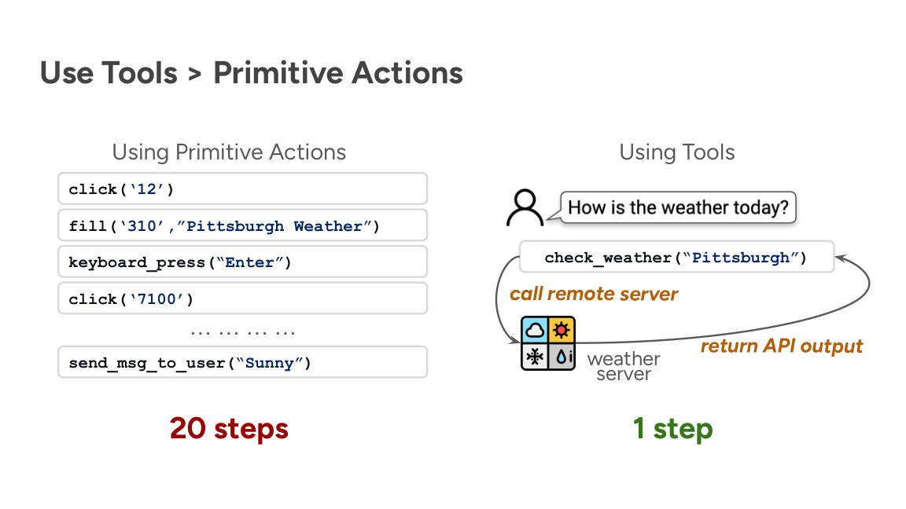
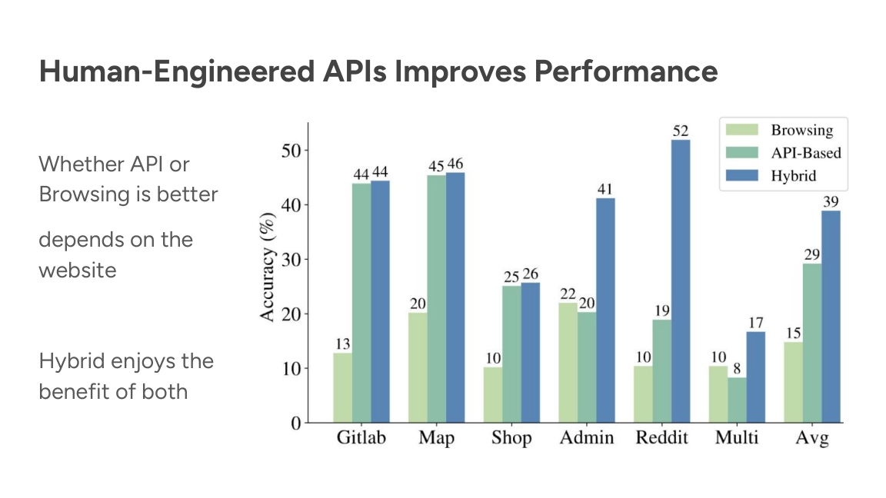
The lecture’s action-space lesson is that abstraction level matters: primitive actions make agents flexible, but tools and APIs make them far more efficient
Slides 17-20 make the same point from several angles.
A computer-use agent can operate with primitive actions such as click, scroll, keypress, read, edit, run, and send a message.
That is maximally general, but it makes the planning horizon long and brittle.
Slide 18 dramatizes the difference with weather lookup: a long sequence of UI actions can often be replaced by one high-level tool call such as check_weather("Pittsburgh").
Slide 19 extends that idea to human-engineered web APIs, and slide 20 adds the important nuance that there is no universal winner.
Some websites are easiest to solve via structured APIs, some require browsing, and hybrid agents benefit from having both channels available.
Choosing an action vocabulary is like choosing the granularity of the MDP. Finer-grained actions are more general, but coarser-grained tools make planning and execution much easier.
A tool packages a reliable multi-step procedure behind a single semantic action. That shortens trajectories, reduces compounding errors, and makes intent clearer.
APIs can be powerful but narrow. Primitive browsing can reach arbitrary interfaces but is slower and more error-prone. Hybrid agents keep the flexibility while exploiting structure when it exists.
If a question asks why tools improve performance, the safest answer is: they raise the action abstraction level, so the model spends less probability mass on brittle low-level control.
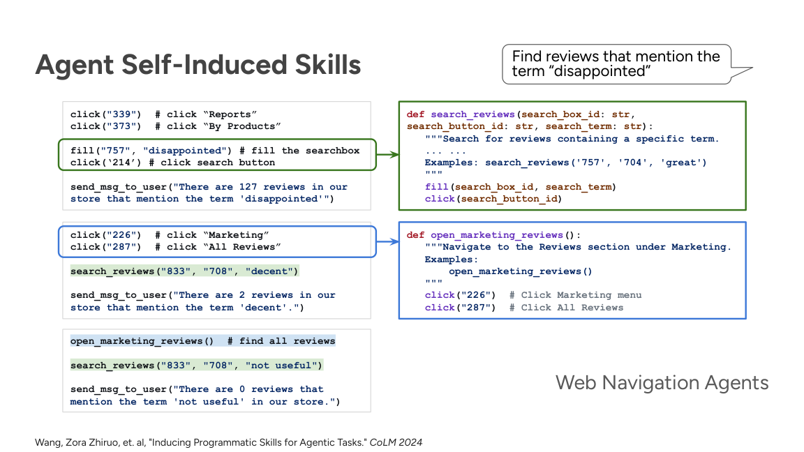
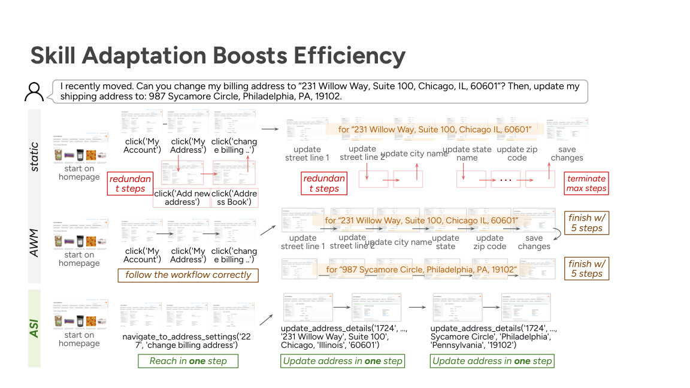
Lecture 18 distinguishes three layers that are easy to collapse together: primitive actions, externally provided tools, and agent-induced skills
The self-induced-skill slides show the agent discovering reusable procedures from its own successful trajectories.
Instead of repeatedly emitting the same low-level action sequence, it can learn or induce a named routine such as search_reviews(...) or
open_marketing_reviews().
The important conceptual leap is that a skill is not just a single external API call.
It can also be a reusable workflow written in the agent’s own action language.
That is why slide 24’s address-update example matters: better skills do not just make the trace shorter; they make the workflow more faithful to the task structure and easier to verify.
Slides 27-29 then zoom out and categorize the kinds of tools agents may use, from knowledge access to computation to world interaction, and compare two learning approaches:
prompt/few-shot tool use, as in Toolformer-style demonstrations, versus specialized tool tokens or embeddings that bake tool invocation more directly into the model interface.
They turn repeated successful sub-trajectories into reusable modules. That reduces search, lowers the number of fragile action decisions, and improves sample efficiency.
Slide 26 is easy to miss, but it is important: compact programmatic skills are easier for humans to inspect and validate than long opaque trajectories, which matters because agents act autonomously while humans remain accountable.
Few-shot prompting is flexible and cheap to add, while specialized tool tokens make invocation more explicit and potentially more scalable. The tradeoff is between interface simplicity and deeper model integration.
A skill is not just “any tool.” In this lecture, a tool is an external capability, while a skill can be an induced reusable procedure that composes tools or primitive actions.
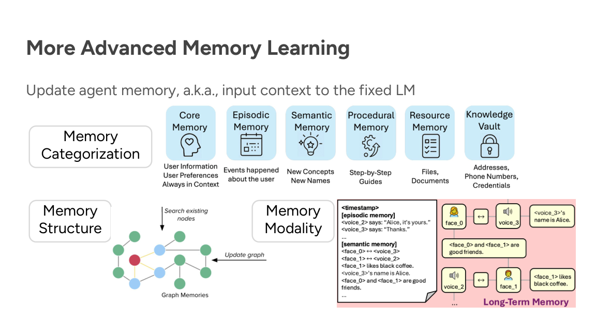
The internal-state section says that once an LM becomes an agent, the prompt is no longer enough shorthand for everything the system knows
Slide 30 introduces internal state as the third major piece of the agent loop, and the next slides unpack what that really means. Some memory is factual or preferential: user identity, preferences, and stable facts that should carry across sessions. Some is procedural: reflection summaries from failures or reusable workflows that can improve later task solving. Slide 34 then gives the cleanest taxonomy in the deck by separating memory into categories such as core, episodic, semantic, procedural, resource, and knowledge-vault memory, while also reminding you that memory has structure and modality choices too. This is why the Mem0 and Letta slides are in the lecture. They are evidence that memory is becoming a product layer for agents, not just an academic side feature.
Without memory, each episode starts almost from scratch. With memory, agents can personalize, reuse past experience, and reduce repeated setup work.
Think of internal state as the agent’s working plus long-term context: user facts, previous events, learned procedures, and references to useful resources.
Useful memory is not the same as always remembering more. Stale, wrong, or privacy-sensitive memory can hurt behavior just as much as missing memory can.
The lecture’s memory is not primarily weight updates to the backbone LM. It is mostly explicit state that gets retrieved, updated, or inserted into the model’s context.
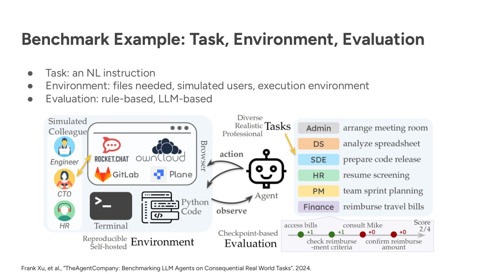
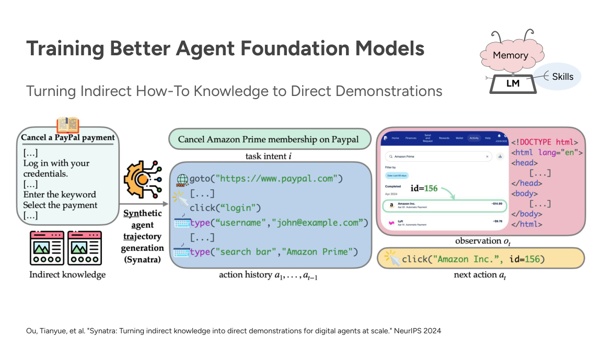
After the core agent loop, the lecture pivots to the harder engineering question: how do we evaluate and train agents that actually operate in realistic environments?
Slides 39-46 are easy to read as a sequence of paper references, but together they make one broader systems point. First, slide 40 says a benchmark must specify three things: the natural-language task, the environment and resources the agent can access, and the evaluation procedure. Slide 41 sharpens that by showing how different benchmarks cover different domains and skills, which means a benchmark can be narrow, broad, or badly mismatched to the real work we care about. Slides 42-43 then move from evaluation to infrastructure: some frameworks are general agents, some are coding-oriented, and many expose special function calling or agent-specific high-level actions on top of the base LM. Finally, slides 44-46 address the training-data bottleneck. Agent models need demonstration trajectories, and those can be synthesized from indirect how-to knowledge, generated through exploration, or collected directly from humans using real interfaces.
The lecture’s benchmark template is compact but important: task, environment, evaluation. If any of the three is unrealistic, the benchmark can give a distorted picture of agent quality.
The framework is not just the LM. It includes memory, skills, tools, function calling, and execution logic that let the backbone operate as an agent.
Static text corpora are not enough. Agent training needs trajectories or trajectory-like supervision, because the target behavior is an action sequence in context, not just a standalone response.
If asked why agent foundation models are hard to train, say: the difficult part is acquiring grounded action demonstrations and realistic environments, not just scaling the base LM.
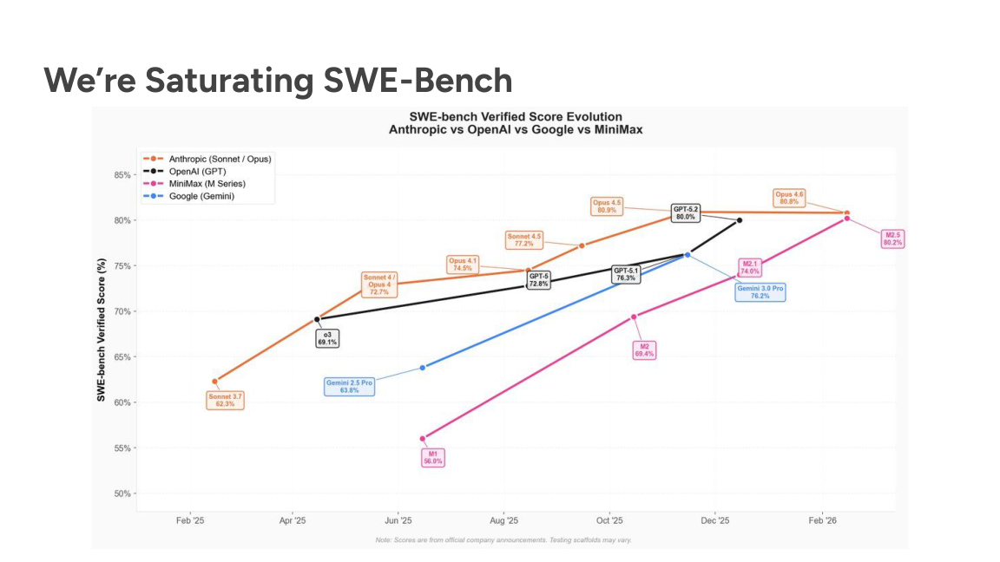
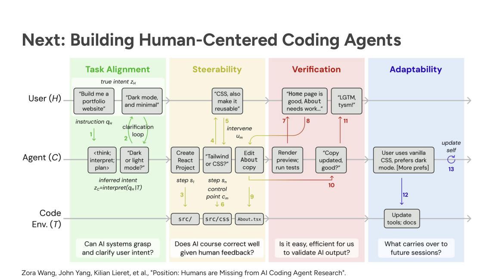
The lecture’s strongest thesis is not “agents are amazing,” but “current agent evaluation is already missing what humans actually need”
The last major transition in the deck is a critique of current coding-agent practice. Slides 48-50 argue that SWE-bench Verified is saturating and that solved benchmark instances can still hide undesirable behavior such as bloated patches. Slide 51 goes one step further: even when an agent “helps,” the human workflow can become worse if the system creates review, debugging, communication, or transparency overhead. Slides 52-53 then propose the replacement frame. Instead of asking only whether an autonomous agent can finish a benchmark task, the lecture asks whether the system captures user intent, supports steering, makes verification easy, and adapts across repeated interaction. That is why slide 53 emphasizes efficient oversight and shapeshifting verification: the right evidence for correctness depends on the task, whether that means a browser render, a loss curve, a CLI recording, or a simulated timeline.
If the benchmark is narrow, contaminated, or ceilinged out, higher scores stop meaning what we want them to mean. The lecture treats this as a measurement problem, not just a bragging-rights problem.
Lecture 17 already warned that optimizing a proxy reward can diverge from the real objective. Lecture 18 makes the same point at the systems level: optimizing a benchmark can diverge from helping a human user.
The four pillars on slide 52 are a useful memory aid: task alignment, steerability, verification, and adaptability. They tell you what the lecture thinks current agents under-optimize.
If asked why “more autonomy” is not the whole goal, say: real users need systems that can be steered, checked efficiently, and adapted over time, not just systems that maximize isolated benchmark completion.
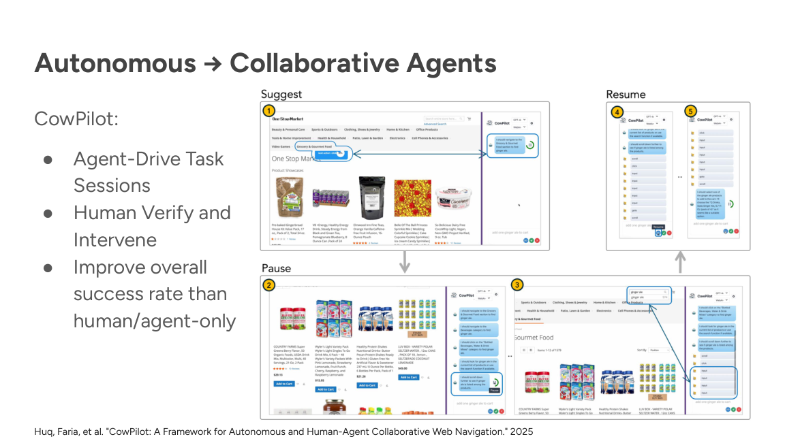
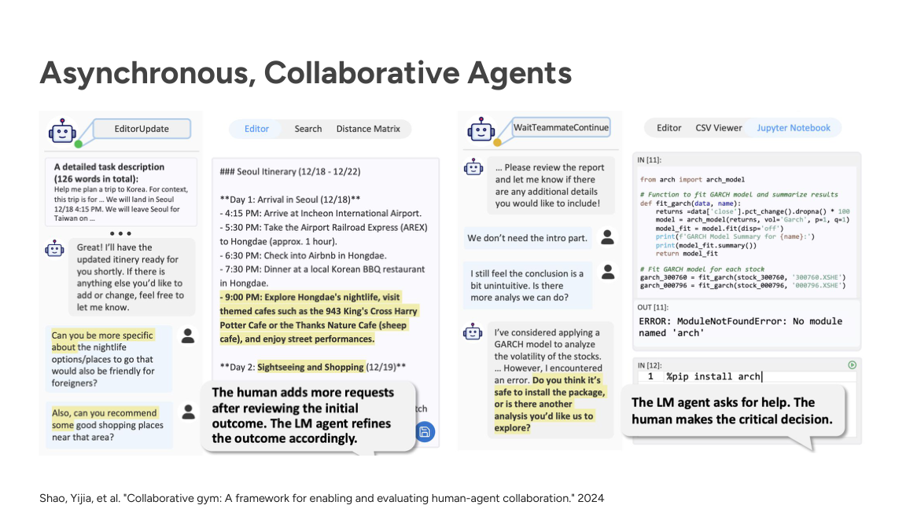
The lecture ends by replacing “fully autonomous” with a richer goal: optimize the joint human-agent workflow
The collaboration slides are important because they are not mere product demos. CowPilot shows a concrete protocol in which the agent can drive a task session, pause, resume, and accept human intervention at useful checkpoints. Collaborative Gym pushes the same idea further: the agent may draft, the human may critique or add constraints, the agent may ask for help on a blocker, and the human may make the final high-stakes decision. In other words, the objective is no longer just final-task success under full autonomy. It becomes joint performance under interruptibility, reviewability, and efficient handoff.
Collaboration is not a fallback for weak agents. It is a first-class design choice that can outperform both human-only and agent-only workflows.
Real deployments often contain uncertainty, partial information, and accountability requirements. A collaborative agent can surface uncertainty and request intervention instead of pretending autonomy is always best.
Once collaboration enters the picture, you need to measure more than final correctness: interruption quality, handoff quality, review burden, and whether the system asks for help at the right time.
“Human in the loop” is too vague. The lecture wants concrete protocols for pause, resume, verify, refine, and override, not just occasional human monitoring.
Glossary
These are the Lecture 18 terms most worth being able to define quickly and precisely.
A system that uses an LM inside a loop with an external environment, observations, actions, and internal state.
The representation through which the environment is exposed to the agent, such as files, HTML, an accessibility tree, or screenshots.
A structured textual view of a UI that exposes elements with semantic roles like button, link, and textbox.
The ability to map a textual intent onto the correct object or region in a screenshot-based observation.
A low-level action such as click, scroll, keypress, read, or edit that directly manipulates the environment.
A higher-level capability or API call that packages a meaningful subtask behind one semantic action.
A reusable workflow, often induced from successful trajectories, that composes primitive actions or tools into a named procedure.
Explicit state used across steps or sessions, such as user facts, past events, procedures, or references to resources.
An evaluation setup that specifies a task, an environment the agent can act in, and a rule or model for scoring success.
An agent designed for steering, verification, intervention, and joint success with a human rather than autonomy alone.
End-of-Lecture Summary
- Lecture 18 takes the LM policy from Lecture 17 and embeds it in an environment loop with observations, actions, and internal state.
- Observation design is a modeling choice: files and accessibility trees expose structured semantics, while screenshots and visual grounding recover layout and visual cues.
- Action abstraction matters. Primitive actions are flexible, but tools, APIs, and induced skills shorten trajectories and reduce brittle planning errors.
- Memory lets agents carry user facts, past events, reusable procedures, and external resources across steps or sessions without changing the backbone weights.
- Real-world agents require benchmark design and trajectory data, not just larger base models.
- The lecture ends by arguing that future progress should be judged by human-centered collaboration and oversight, not autonomy scores alone.
- RAG vs. agent: RAG retrieves and generates; an agent also acts on an external environment.
- Text observations vs. screenshots: text is compact and semantically typed; screenshots preserve layout but require grounding.
- Primitive actions vs. tools: primitive actions are universal but long-horizon; tools are shorter and more reliable but less general.
- Tool vs. skill: a tool is an external capability; a skill can be an induced reusable workflow that composes tools or actions.
- Memory vs. weights: the lecture’s memory is mostly explicit retrievable state, not finetuning the LM every time something new happens.
- Benchmark success vs. human usefulness: high autonomous benchmark performance can still miss steering, verification, and workflow overhead.
- Why does the lecture say a pure RAG system is usually not an agent?
- When would an accessibility tree be a better observation than a screenshot, and when would the screenshot be better?
- Why can one tool call outperform a long primitive-action trace even if both are in principle capable of solving the task?
- What is the difference between a tool, a self-induced skill, and a memory entry?
- Why do realistic agent benchmarks need task, environment, and evaluation rather than just prompts and answers?
- What problem is the lecture trying to solve by moving from solo autonomous agents to collaborative human-agent workflows?
Lecture 19
Quantization
This section compresses materials/anlp-s2026-19-quantization.pdf into the efficiency ideas most likely to matter on an exam:
why model memory becomes the bottleneck once we try to deploy large models on everyday hardware,
how low-bit quantization maps floats into integers, when absmax versus zero-point quantization makes sense,
why outliers break naive INT8 and motivate LLM.int8(), and how training-time methods such as QAT and QLoRA
differ from inference-only quantization.
Roadmap
Lecture 19 is the systems sequel to Lecture 18. Lecture 18 asked how to make LMs act usefully in the world; Lecture 19 asks how to make those systems fit and run on real hardware. The deck first reviews how computers represent numbers, because quantization is fundamentally a change of representation. It then introduces inference-time INT8 quantization, explains why outliers create most of the pain in large transformers, and ends by separating two training-time uses of quantization: QAT for accuracy recovery and QLoRA for memory-efficient fine-tuning.
- Compute the memory footprint of a model from parameter count and precision, and explain why quantization mainly attacks memory and bandwidth bottlenecks.
- Explain the difference between floating point and integer representations at a high level, especially why BF16 keeps range better than FP16.
- Write the idea of absmax quantization in words and explain why low-bit matmuls still accumulate into INT32.
- Compare absmax and zero-point quantization, especially symmetric versus asymmetric data.
- Explain why outliers cause large quantization error and how
LLM.int8()avoids throwing everything back to full precision. - Explain what fake quantization does in QAT and why QLoRA solves a different problem from QAT.
- Slides 6-13 are merged into one number-format block because the unsigned-integer, signed-integer, floating-point, and BF16 examples are all setup for one later question: what information the representation can preserve.
- Slides 17-22 are compressed into one quantization-schemes block rather than treated as four separate notes, because the important exam distinction is the comparison between absmax and zero-point plus the role of vector-wise scaling.
- Slides 30-34 are folded into one deployment block; the GGML/GGUF screenshots and local-model examples are evidence that real systems use mixed recipes, not standalone concepts to memorize line by line.
- Slide 42’s “many other methods” pointer is not given its own block, because the lecture’s examinable core is the logic of the main methods, not a taxonomy of every library feature.
ANLP_quiz_5_answer_key.pdfdirectly tests the key idea behindLLM.int8(): keep a tiny set of outlier features in higher precision while quantizing the rest.- The same quiz directly tests QAT’s fake-quantization story, so the training block below emphasizes exposure to quantization noise rather than vague “robustness” language.
- Quiz 5’s parallelism questions reinforce that this course likes bottleneck reasoning, so the notes are organized around which resource each method saves: memory, bandwidth, communication, or accuracy.
Lecture 19 begins where Lecture 18 leaves off: once models and agents are useful, the next constraint is whether they physically fit on the hardware you want to use
The motivation slides are not generic “models are big” remarks. They are making a concrete systems claim: memory is often the first wall you hit before algorithmic elegance matters. The Qwen3-8B example is the lecture’s anchor. At 16 bits per parameter, an 8B-parameter model needs about 16 GB just to store weights, and the slide adds a rough inference-time multiplier of about \(1.5\times\) to account for activations and other runtime state. That pushes the total to roughly 24 GB, which already breaks a 16 GB MacBook Air or T4 GPU. Quantization is introduced as the simplest way to attack that bottleneck: store each weight using fewer bits so the memory footprint and memory traffic drop before the model ever runs.
The lecture’s motivating arithmetic is worth being able to reproduce quickly:
\[ 8\text{B params} \times 16 \text{ bits} = 128 \text{B bits} = 16 \text{ GB of weights.} \]
If inference needs about \(1.5\times\) that footprint, the runtime budget is roughly 24 GB. At 4-bit weights, the same back-of-the-envelope calculation drops to about 4 GB of weights and around 6 GB total.
Quantization is motivated first as a deployment method: make inference and fine-tuning possible on devices that otherwise run out of memory or swap to disk.
Large-model inference is often limited by moving weights through memory, not only by raw floating-point throughput. Fewer bits means less storage and less data movement.
Lecture 18 cared about realistic deployment and human-facing systems. Lecture 19 asks the hardware question that immediately follows: can the model actually run on the machine that needs it?
Quantization does not magically make every model faster on every device. The most reliable win is memory footprint; latency improvements depend on kernels, hardware support, and how much dequantization overhead remains.
The warm-up on integers and floating point matters because quantization is a representation change: you only understand the approximation if you know what the original format was buying you
Slides 6-13 review bits, unsigned integers, signed integers, and floating point because quantization is not just “store fewer digits.” Unsigned integers allocate all their patterns to nonnegative values. Signed integers use a sign convention such as two’s complement to cover both positive and negative ranges. Floating point is different: each number carries its own sign, exponent, and significand, so it can represent values across a wide dynamic range without using the same linear spacing everywhere. That is the bridge to BF16. The lecture explicitly asks for the pros and cons of BF16, and the key point is that BF16 keeps the wide exponent range of FP32 but uses fewer significand bits, so it preserves range better than FP16 while sacrificing precision.
The slide’s floating-point equation is the right abstraction to remember:
\[ \text{value} = (-1)^{\text{sign}} \cdot (1.\text{significand}) \cdot 2^{\text{exponent}-\text{bias}}. \]
The exponent controls scale or dynamic range; the significand controls local precision. Quantization to INT8 removes that per-number floating exponent and replaces it with a shared scale chosen for a tensor, vector, or block.
Float formats let different numbers effectively live at different scales. Integer quantization forces many values to share one scale, which is exactly why outliers become so dangerous later in the lecture.
Floating point spends bits on flexibility. Integer quantization spends fewer bits, but only after choosing a fixed grid that all values must land on.
BF16 is attractive for deep learning because it keeps the FP32-style exponent range, so overflows and underflows are less painful than in FP16. The tradeoff is coarser precision because the significand is shorter.
If asked why INT8 is a more aggressive approximation than BF16, the clean answer is: BF16 is still floating point, so every number keeps its own exponent; INT8 relies on a shared scaling rule and therefore loses more information.
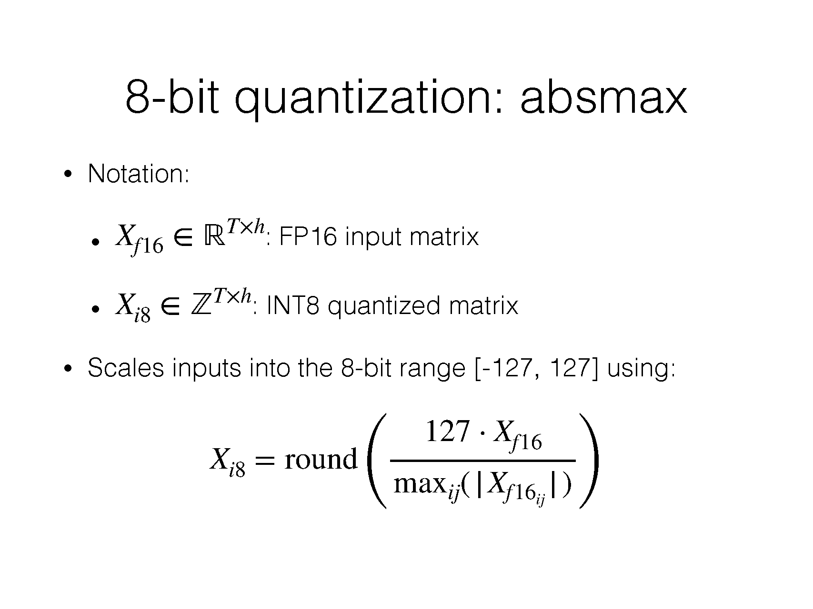
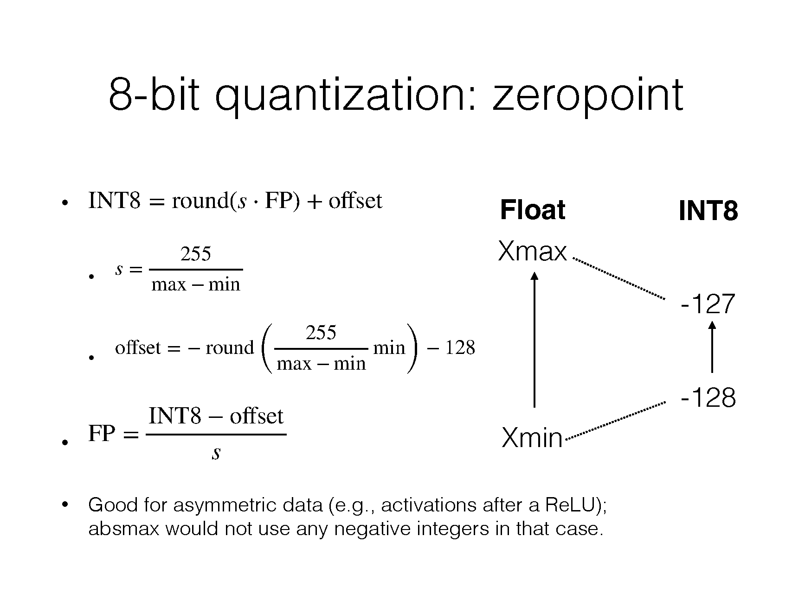
The lecture’s main quantization comparison is between absmax and zero-point: both turn float values into low-bit integers, but they make different assumptions about the data distribution
The quantization section starts with the general definition: map values from a large set into a smaller set, which necessarily introduces quantization error. For LLMs, the main targets are the attention and feed-forward projection layers, because they dominate both parameter count and a large fraction of computation. Absmax quantization is the lecture’s clean symmetric baseline. It scales values by the maximum absolute magnitude so the largest positive or negative value lands near \(\pm127\), rounds to INT8, performs low-bit matrix multiplication, and accumulates results into INT32 before rescaling. Zero-point quantization instead chooses a scale and an offset so an arbitrary interval \([x_{\min}, x_{\max}]\) maps into the INT8 range. That makes it better when the data are asymmetric, because the method does not assume zero sits at the middle of the useful range.
The two formulas worth keeping straight are:
\[ Q_{\mathrm{absmax}}(X) = \operatorname{round}\!\left(\frac{127X}{\max_{ij}|X_{ij}|}\right), \qquad X \approx \frac{\max |X|}{127} Q_{\mathrm{absmax}}(X). \]
\[ Q_{\mathrm{zp}}(x)=\operatorname{round}(s x)+z, \qquad s = \frac{255}{x_{\max}-x_{\min}}. \]
The lecture also adds an important practical refinement: vector-wise quantization. Instead of one global scale for all of \(X\) or \(W\), quantize each row of \(X\) and each column of \(W\) separately so local ranges are better matched.
The stored quantized weights or activations are low precision, but scale factors still need to be stored, and matmul results are accumulated in INT32 to avoid catastrophic overflow during summation.
Absmax is symmetric and simple, so it works naturally when the data are centered around zero. Zero-point is asymmetric and better when the values occupy a shifted range, such as mostly positive activations.
In modern terminology, most of this first inference block is post-training quantization: start with an already trained model, quantize it, and run inference without retraining the network to adapt.
Do not say “INT8 means every value is stored exactly with 8 bits instead of 16 bits.” The lost piece is the floating-point adaptivity. Many different float values now collapse onto the same discrete code once the shared scale is chosen.
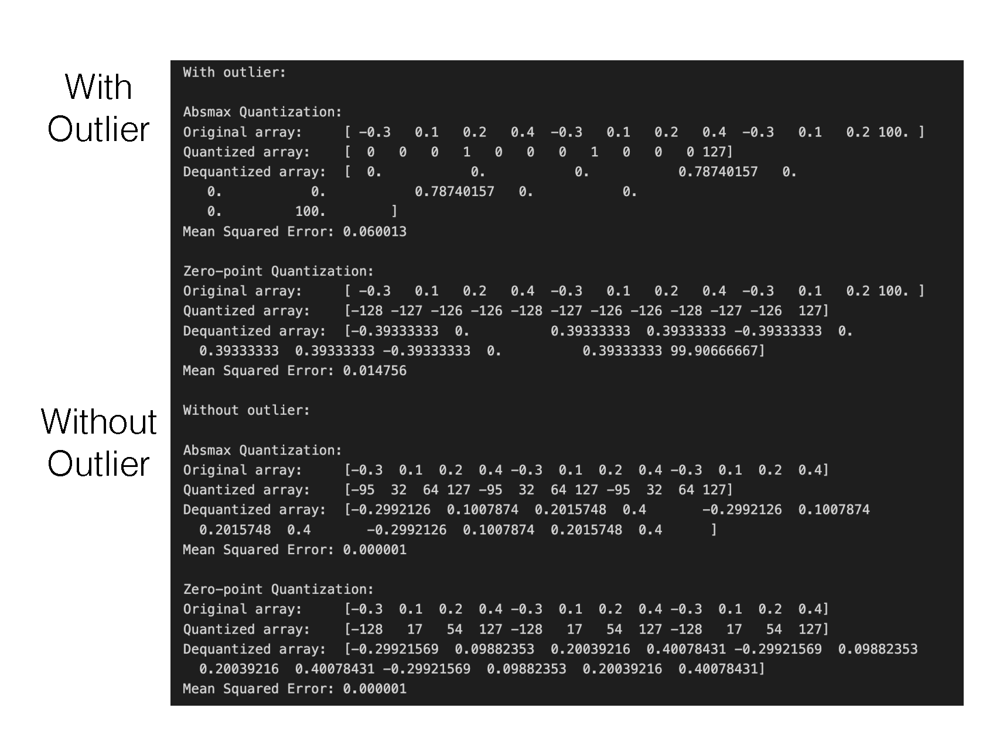
The reason naive INT8 degrades is not that all values are hard to quantize. It is that a few outliers can force the shared scale to become so coarse that the ordinary values lose their detail
The information-loss slides make the lecture’s central error story concrete. Quantization error is always nonzero in general, but it becomes especially bad when the scale is set by an outlier. The toy example shows exactly what happens. Without a huge outlier, both absmax and zero-point reconstruct values like \(-0.3\), \(0.1\), \(0.2\), and \(0.4\) almost perfectly. Add a single value of \(100\), and the grid must stretch to cover it. Now the smaller numbers are forced onto a much coarser staircase, so many distinct values round to almost the same code. That is the missing intuition behind most quantization failures in large models.
The step size is the real villain. Roughly:
\[ \Delta_{\mathrm{absmax}} \approx \frac{\max |x|}{127}, \qquad \Delta_{\mathrm{zp}} \approx \frac{x_{\max}-x_{\min}}{255}. \]
If one outlier makes \(\max |x|\) or \(x_{\max}-x_{\min}\) huge, then every non-outlier is quantized on a much coarser grid.
This is why “just use 8-bit” is not a full answer. The error is not evenly distributed; it is dominated by where the scale was chosen and which values set the range.
Imagine forcing both pennies and hundred-dollar bills onto the same ruler. The ruler must be long enough for the hundred-dollar bill, so the pennies become indistinguishable.
Using separate scales for rows, columns, or groups localizes the damage. One pathological vector no longer sets the range for the entire tensor.
If asked where quantization error comes from, do not stop at “rounding.” The deeper answer is shared scaling plus clipping or rounding, especially when outliers distort the chosen range.
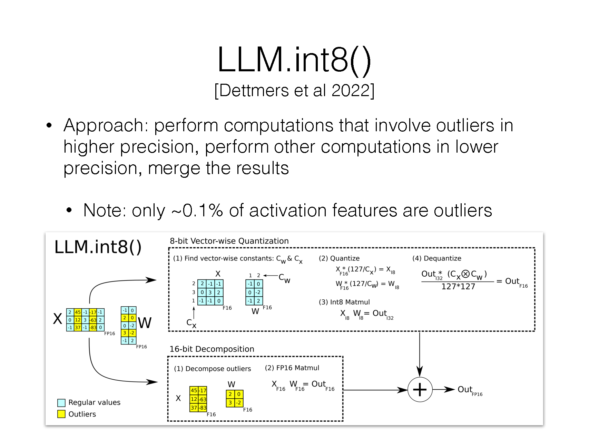
LLM.int8() does not abandon INT8; it isolates the rare outlier features and handles only those in higher precision.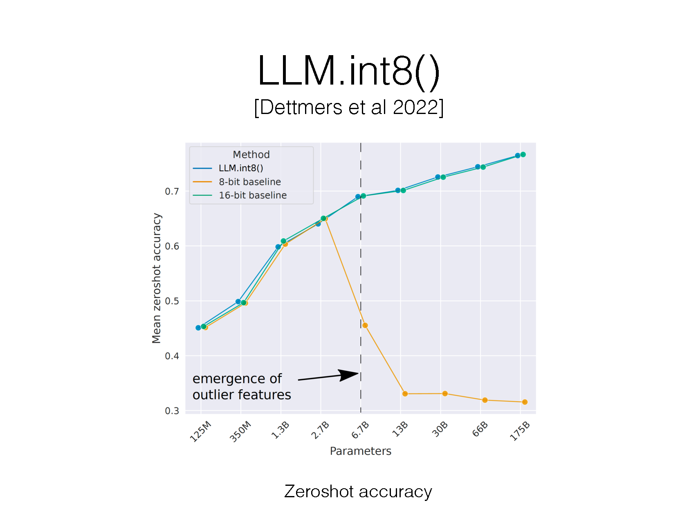
LLM.int8() stays close to the 16-bit baseline.LLM.int8() is the lecture’s key repair strategy: quantize almost everything, but do not force the tiny outlier subspace onto the same low-precision path as ordinary features
The deck reports that transformer LMs contain outlier activation features, meaning a small set of activation columns become unusually large.
In models of at least 6.7B parameters, the slides say an outlier occurs in every layer.
The hypothesis is then simple: standard INT8 fails because those outliers wreck the shared scale.
LLM.int8() responds with a mixed-precision decomposition.
Regular values use vector-wise INT8 quantization and low-bit matrix multiplication.
The outlier features are split off and computed in higher precision, then merged back into the final result.
The lecture emphasizes that only about \(0.1\%\) of activation features are outliers, so most of the memory benefit remains.
That is why Quiz 5 treats this as the central takeaway rather than as a niche engineering trick.
The zeroshot-accuracy curve and perplexity table show that naive 8-bit quantization becomes much worse once large-model outliers emerge, while LLM.int8() stays close to 16-bit quality.
The method avoids wasting the whole quantization budget on a tiny pathological subset. Most values stay cheap, while the rare dangerous features get the precision they need.
Not all weights go back to FP16. Only the computations involving the detected outlier features stay higher precision; the rest still use the low-bit path.
The improvement is not “a better rounding function.” The whole point is selective mixed precision based on outlier structure. That is exactly why the correct quiz answer mentions high-precision computation for a small outlier subset.
The GGML, GGUF, and llama.cpp slides are less about memorizing product names and more about understanding how real local inference stacks package quantization choices
This block is easy to overread as a list of tools, but the conceptual message is useful. GGML is the tensor library and quantization-kernel layer. GGUF is the file format that stores the model architecture and tensor data. Llama.cpp is the inference runtime that uses those pieces. The Q4_K example matters because it shows what practical quantization often looks like: group weights into blocks, quantize them to low bits, and still store block-level scales and offsets as side information. The Q4_K_M example adds an even more important systems lesson: some tensors are sensitive enough that real deployments keep them at higher precision than the headline bit-width. The lecture’s screenshot of Qwen3-8B GGUF variants reinforces that “a 4-bit model” is really a family of backend-specific quantization recipes, not one universal representation.
Deployment quantization is rarely one global rule applied uniformly to every tensor. Real systems mix precisions, group sizes, scales, and backends to balance size and quality.
GGML is the computation layer, GGUF is the storage format, and llama.cpp is the inference engine. Keeping those roles distinct prevents a lot of confusion.
You probably do not need to memorize the exact block sizes of Q4_K. The main lesson is that practical schemes use per-block metadata and often leave some sensitive tensors at higher precision.
Smaller files help local deployment, but the best bit-width depends on hardware backend, kernel support, and how much accuracy loss the application can tolerate. There is no single “best” quantization level independent of deployment context.
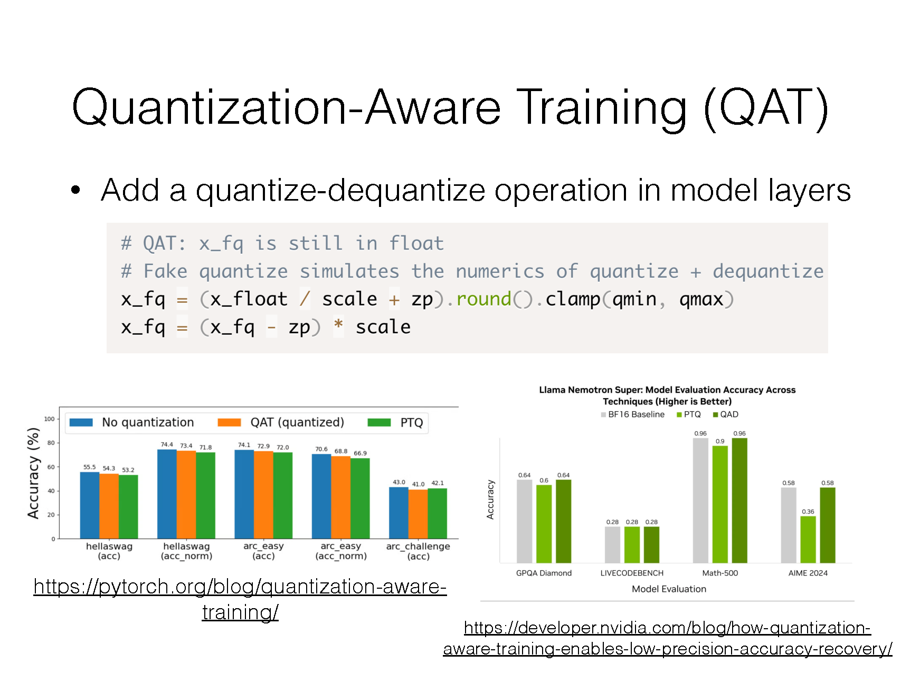
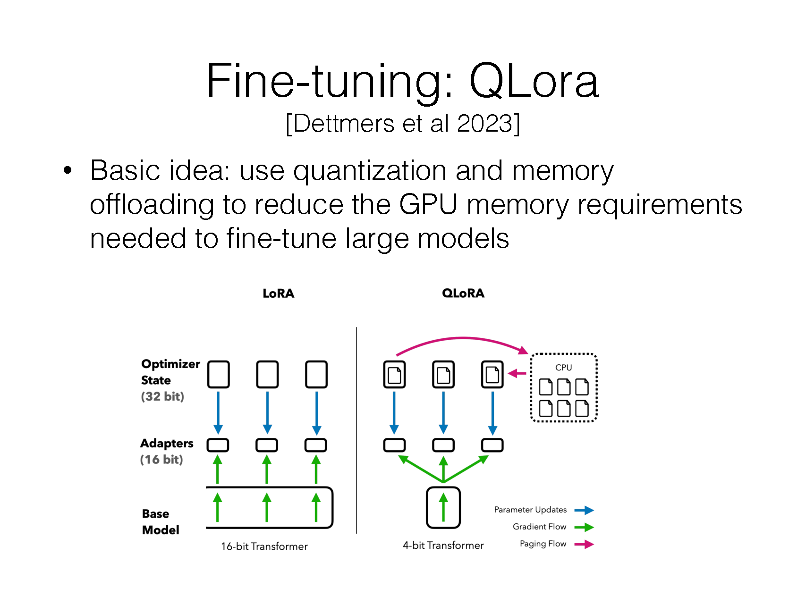
The last part of the lecture separates two different training-time stories that students often blur together: QAT teaches a model to survive later quantized inference, while QLoRA uses quantization to make fine-tuning fit in memory
QAT is motivated by the idea that post-training quantization can degrade accuracy because the model was never trained to tolerate that low-bit noise. The fix is to insert fake quantization, meaning quantize-dequantize operations, into the computational graph during training. Training still happens in floating point, but the forward pass now exposes the model to the distortions created by later quantized inference. QLoRA solves a different problem. Its goal is not mainly to recover inference accuracy; it is to reduce the GPU memory needed for fine-tuning large models. The slide’s diagram shows the key picture: compare ordinary LoRA with a 16-bit base transformer to QLoRA with a 4-bit base transformer, higher-precision adapter updates, and offloaded or paged state. In other words, QAT is about robustness to quantization noise, while QLoRA is about training feasibility under memory constraints.
Insert fake quantization during training so the parameters can adapt to the noise pattern introduced by later low-bit inference. This is why Quiz 5 says the main effect is exposure to quantization noise, not integer-only training.
Keep the large base model quantized and train small adapter-style updates, with memory offloading to reduce GPU pressure. The point is to make fine-tuning fit on smaller hardware.
In QAT, the training computation is still fundamentally float-based even though fake quantization is inserted. In QLoRA, the trainable adapters and some optimizer-related state remain higher precision while the frozen base model is quantized.
Do not answer a QAT question with a QLoRA story or vice versa. QAT is an accuracy-recovery technique for later quantized inference; QLoRA is a memory-saving fine-tuning recipe.
Glossary
These are the Lecture 19 terms most worth being able to define quickly and precisely.
Mapping values from a larger, higher-precision set to a smaller, lower-precision set such as FP16 to INT8.
The difference between the original value and the quantized then dequantized value after scaling, rounding, and possible clipping.
The factor that maps a floating-point range onto an integer grid and back again.
An additive offset used in asymmetric quantization so the floating-point range does not have to be centered at zero.
A symmetric quantization rule that scales by the maximum absolute value so the data fit into the signed INT8 range.
An asymmetric quantization rule that uses both a scale and an offset to map \([x_{\min}, x_{\max}]\) into INT8.
Using separate quantization scales for different rows, columns, or vectors rather than one scale for the whole tensor.
An activation dimension whose values are much larger than the others, making shared-scale quantization much less accurate.
LLM.int8()
A mixed-precision method that quantizes most computation to INT8 but keeps a tiny outlier subset in higher precision.
Training with fake quantization in the graph so the model learns to tolerate later low-bit inference noise.
A memory-efficient fine-tuning recipe that keeps the base model quantized while training adapter-style updates.
A file format used in the local-inference ecosystem for storing quantized model tensors and model metadata.
End-of-Lecture Summary
- Lecture 19 reframes large-model efficiency as a representation problem: fewer bits mean smaller weights, lower memory traffic, and broader deployability.
- Floating-point formats keep per-number dynamic range through exponents; integer quantization replaces that flexibility with a shared scale and therefore introduces approximation error.
- Absmax is a simple symmetric INT8 scheme, while zero-point handles asymmetric ranges better by adding an offset.
- Outliers are the key failure mode because they stretch the shared grid so much that ordinary values lose resolution.
LLM.int8()fixes that by using mixed precision: most features stay INT8, while a tiny outlier subset stays higher precision.- QAT and QLoRA are both training-time uses of quantization, but QAT is about adapting to quantization noise and QLoRA is about making fine-tuning fit in memory.
- FP16 / BF16 vs INT8: FP16 and BF16 are still floating point; INT8 needs a shared scaling rule and therefore loses more information.
- Absmax vs zero-point: absmax is symmetric and simple; zero-point is asymmetric and uses the full range better when values are not centered at zero.
- Global vs vector-wise quantization: vector-wise uses more local scales, so one bad vector cannot distort the whole tensor.
- Naive INT8 vs
LLM.int8(): naive INT8 sends all features through the same low-bit path;LLM.int8()keeps only the rare outlier subset high precision. - Inference-time quantization vs QAT: inference-time PTQ quantizes an already trained model; QAT retrains with fake quantization so the model adapts.
- QAT vs QLoRA: QAT targets accuracy under low-bit inference, while QLoRA targets memory-efficient fine-tuning.
- Why is quantization mostly a memory and bandwidth story before it is a pure arithmetic-speed story?
- What information does floating point keep that a shared-scale INT8 representation throws away?
- When would zero-point quantization be better than absmax, and why?
- Why do outlier features create disproportionate quantization error in large transformers?
- What is the exact high-level idea behind
LLM.int8(), and why is “better rounding” the wrong explanation? - How do QAT and QLoRA use quantization differently, and what problem is each one solving?